Loom is a browser-based, session-based music workstation. It organises sound into lanes (instrument tracks), clips (patterns of notes), and scenes (rows of clips launched together). Eight synthesis engines are available — TB-303, Subtractive, FM, Wavetable, Karplus-Strong, West Coast, Sampler, and Drum Machine — and all synthesis runs live in the browser with no install or sign-in required.
Beyond the engines, Loom has note velocity & dynamics (an Ableton-style velocity lane), per-clip and arrangement-wide loop regions, per-lane modulation and FX with a sidechain mixer, MIDI import, ready-made sampled drum kits, a playable arrangement timeline, improved session editing workflow (inline track/scene rename, duplicate track/scene, and capture-playing-to-scene), optional stem separation + transcription (split a finished song into 4 lanes via a local helper and optionally derive editable note/drum lanes), key & scale musical assistance (a project key/scale with an optional piano-roll scale lock — off by default, genre generators, an examples gallery, and a chord-accompaniment maker), and editable warp markers for locking audio loops to tempo.
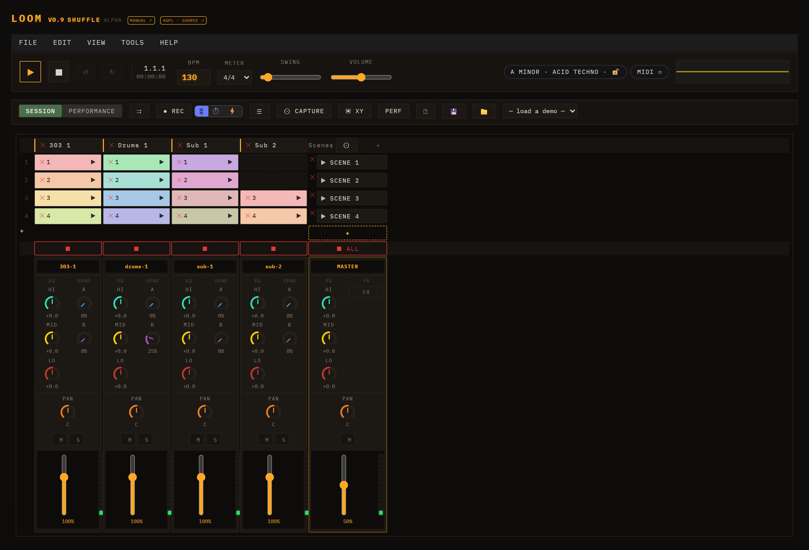
The Loom interface: transport across the top, the session clip grid in the centre, and per-lane channel strips below.
| # | Chapter |
|---|---|
| 1 | Getting Started |
| 2 | Transport |
| 3 | Sessions, Lanes, Clips & Scenes |
| 4 | Engines |
| 5 | Editing Clips |
| 6 | Modulation & Note FX |
| 7 | Mixing & FX |
| 8 | MIDI & Samples |
| 9 | Saving & Export |
| 10 | Performance & Arrangement |
| 11 | Developer Guide |
Live demo: https://ijol.github.io/Loom/
Loom runs entirely in the browser — no installation, no account, no plugins.
npm install followed by npm run dev. The app is available at http://localhost:5173.When the app opens it loads the Minimal Techno demo automatically, so there is already a full arrangement ready to play.
The full Loom interface. Transport across the top; coloured clips in the session grid; per-lane channel strips below.
Loom organises music in three nested concepts:
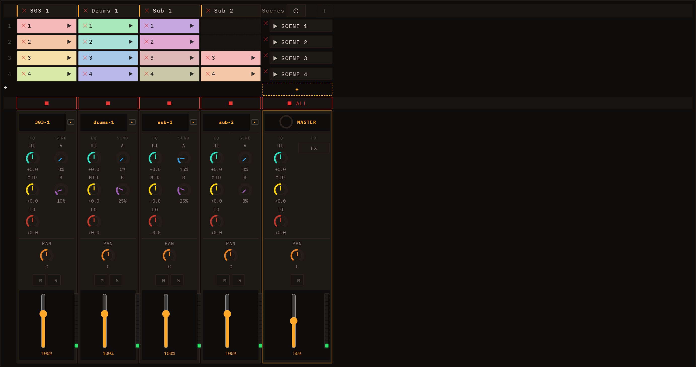
The session grid: lanes run left to right as columns, scenes top to bottom as rows. Click a clip to select it; click the scene launch button on the left to fire the whole row.
Click any clip cell to open its editor in the inspector below the grid. The editor shows a piano roll for melodic lanes and a drum grid for drum lanes.
The header runs across the top of the interface in two rows. The first row (transport & tempo) holds the playback and timing controls you touch while the music plays; the second row (session & I/O) holds the mode toggle, recording/export, and session file management.
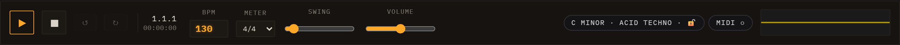
Press ▶ (#play, title "Play — arranca el transporte") to start playback, and ⏹ (#stop, title "Stop — detiene el transporte") to stop it. Play and Stop are now two separate buttons — Play is no longer a play/stop toggle. When you press Play the browser's AudioContext resumes automatically if it was suspended (a browser policy requirement on first interaction).
The readout shows two values side by side:
#transport-position, e.g. 1.1.1) — the current song position derived from elapsed time, BPM, and the active meter. The counter resets to 1.1.1 on each new Play.#transport-time, e.g. 00:00:00) — wall-clock time since the most recent Play press.Both readouts update via requestAnimationFrame while playing and freeze on stop so you can read the final position. Because each lane has its own independent loop clock, the global position is computed from elapsed seconds rather than a single sequencer cursor. The visual playhead is similarly a display-only timer matched to scheduled audio time; it may drift slightly under browser tab throttling, but audio scheduling is unaffected.
BPM (#bpm) — sets the tempo. Range: 40–240 BPM, default 130. The field accepts floating-point values (e.g. 128.57 BPM, step 0.01); tempos detected from MIDI imports or stem separation are no longer rounded to an integer. You can type a value directly or use the number-input spinners. BPM changes propagate immediately to the sequencer, all lane engines, delay/LFO sync, and stretch-mode loop buffers. The change takes effect on the next scheduled step; it does not alter a note that is already held.
Each 16th-note step lasts 60 / bpm / 4 seconds.
Meter (#meter) — sets the global time signature. The dropdown offers common meters: 4/4, 3/4, 2/4, 5/4, 6/8, 7/8, 9/8, and 12/8. The meter controls how bars map onto the 16th-step grid and how the position readout counts beats. Changing the meter takes effect on the next loop cycle.
Swing (#swing) — intended to add a shuffle feel by delaying odd 16th-note steps. Range: 0 (straight) to 0.6. The value is saved and restored with the session. Note: swing is currently stored and persisted but is not yet read by the scheduler, so moving the slider does not change the timing you hear — full swing is planned for a future update.
Volume (#volume) — the master output level, range 0–1 (default 0.5). This is a post-mix gain applied before the output visualiser.
Session / Performance (#mode-toggle) — switches the main view between the Session clip grid and the Performance arrangement view.
⤉ Copy to Performance (#copy-to-performance) — an icon-only button (tooltip "Copiar las escenas a la timeline de Performance") that copies the current scenes onto the Performance timeline. See Performance & Arrangement.
● REC (#rec, tooltip "Grabar — el modo se elige al lado") arms recording; the mode selector (#rec-mode) beside it chooses what gets recorded:
data-recmode="take", the default) — records knob moves and clip launches into a performance take. See Modulation & Note FX for how automation lanes work.data-recmode="live") — records the real-time audio output to a WAV.data-recmode="offline") — renders the current scene to a WAV offline (fast).Click REC again to disarm. This unified REC group replaced the old standalone WAV-export button.
The canvas at the far right (#viz) shows a real-time waveform of the master output. It updates continuously while the page is open and gives a quick visual check that audio is flowing.
The remaining controls in the transport row are covered in dedicated chapters:
#new-session, #save, #load) — session file management. See Saving & Export.#demo-picker) — loads a bundled demo arrangement into the session..midi-panel) — imports a Standard MIDI File. See the MIDI Import chapter for details.#stems-open) — opens the stem-separation dialog, which splits a finished song into four Sampler lanes (vocals / drums / bass / other) via a local helper service. Requires the service to be running; see MIDI & Samples → Stem separation.The session view is the main workspace in Loom. It organises everything you hear into a compact grid of lanes and clips that you can launch, edit, and rearrange in any order.
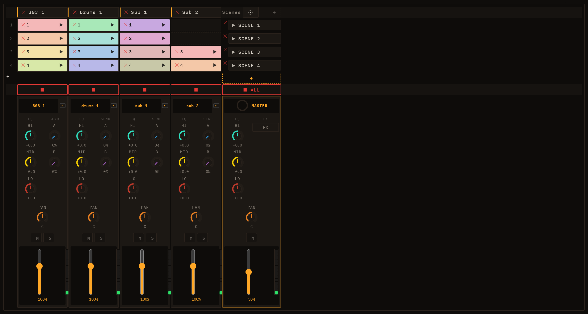
Lane — one instrument track. Each lane runs its own synthesis engine (TB-303, Drums, Subtractive, FM, Wavetable, Karplus, or Sampler) with its own mixer strip and insert chain. Lanes appear as columns in the grid.
Clip — a pattern of notes that lives at one lane × scene cell. Every clip stores a list of note events, an optional name, a colour, and a length in bars. A cell is either filled (it holds a clip) or empty.
Scene — a row in the grid. Launching a scene fires one clip per lane simultaneously, aligning all starts to the same quantize boundary so the whole arrangement snaps together cleanly.
Lane names run along the top header row; row numbers (1, 2, 3 …) label the scenes down the left edge. Scenes launch buttons sit in the rightmost column. Each filled cell shows the clip's name (or its row number as a fallback) against the clip's pastel colour. A ⚙ icon in the lane header opens that lane's instrument editor.
A newly created instrument lane starts out empty — no placeholder clips are added to its column; you fill cells yourself. Audio and Sampler lanes created from a dropped WAV or loop place their clip in row 1 only. The grid always keeps at least one launchable scene available even when every lane is empty.
Right-clicking grid elements opens a context menu. On a lane header: Rename track, Edit instrument, Duplicate track, Stop track, and Delete track (red). On a scene cell: Rename scene, Launch scene, Duplicate scene, Capture playing -> scene, Add scene, and Delete scene (red). On a filled clip: Open editor, Play / Stop, and Delete clip (red). On an empty cell: Create clip — on audio lanes this entry reads Import audio (WAV)....
Below the scene rows there is a stop row: each lane has its own ⏹ stop button, and a global ⏹ all button at the far right stops every lane at once.
A small ✕ cross appears on every lane header (Delete track), every filled clip cell (Delete clip), and every scene cell (Delete scene). Deleting a clip is immediate. Deleting a lane or scene asks you to confirm in an in-app dialog (OK / Cancel, with the destructive choice in red) only when the target still has content — an empty lane or scene is removed straight away. Every deletion is undoable with Ctrl+Z, which restores the lane, scene, or clip along with its audio resources.
Click the ▶ icon on any filled cell to launch that clip. The icon switches to ⏸ once the clip is playing; clicking ⏸ stops that lane. Clicking anywhere else on the cell body — outside the play icon — opens the inspector without affecting playback.
From a cold start (transport stopped), launching a clip starts it immediately, and the Quantize setting decides the alignment of that first start. While the session is already playing, Loom keeps everything phase-aligned instead:
Click the ▶ N button at the right of a scene row to launch all clips in that row. The toolbar's ⏹ All button stops every lane at once.
The Quantize setting (per clip, falling back to the lane's, then the session's global) governs cold starts — the alignment used when you launch from a stopped transport. Once the transport is running, the loop-end sync above takes over so launches stay musically aligned.
Track and scene names support inline rename: double-click a lane name in the header or a scene name in the scene cell, type the new label, and press Enter.
You can also use the context menus to duplicate structure quickly:
To snapshot the current live state into a new scene, use Capture scene:
Capture scene appends a new scene row and writes one clip-per-lane mapping from whatever is playing at that moment.
Clicking a clip cell body opens the inspector below the grid with controls for that clip.
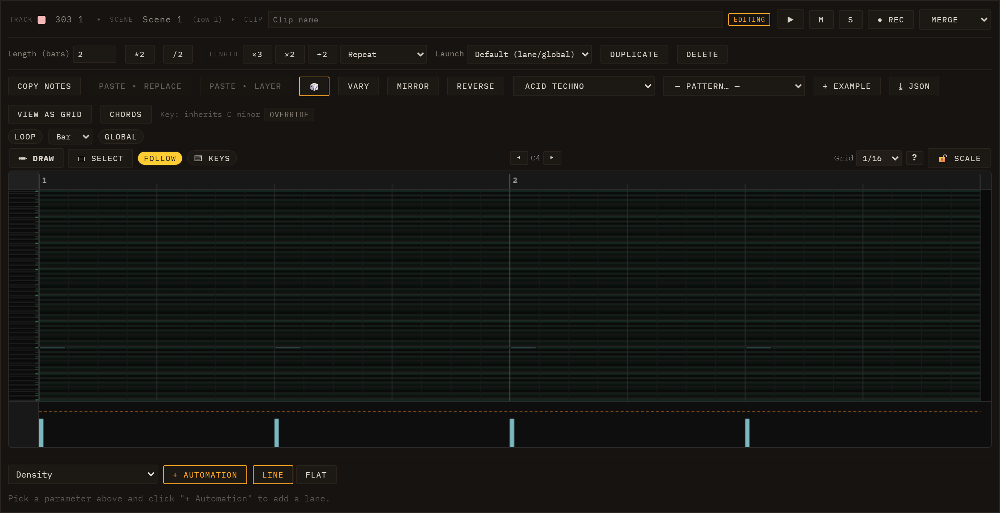
| Control | What it does |
|---|---|
| Name | Free-text label shown on the cell. |
| Length (bars) | How many bars the clip plays before looping. |
| Quantize | Per-clip launch alignment: Default (inherits lane/global setting), Immediate (no wait), or a fixed interval — 1/4, 1/2, 1 bar, 2 bars, or 4 bars. |
| Copy notes | Copies the clip's notes to an internal clipboard. |
| Paste ▸ Replace | Replaces the selected clip's notes with the clipboard contents. |
| Paste ▸ Layer | Merges the clipboard notes into the selected clip rather than replacing them. |
| Duplicate | Creates a copy of the clip in the next empty cell of the same lane. |
| ↔ Editor | Toggles between the piano-roll editor and the drum-grid editor. The appropriate editor is chosen automatically based on the lane's engine; use this button to switch if needed. See Editing Clips for the full editing reference. |
| 🎲 Notes | Randomizes the clip's note content using the current scale and root settings. |
| Delete | Removes the clip from the grid (also triggered by Delete/Backspace while the inspector is open). |
The editor embedded inside the inspector is rebuilt each time a new clip is selected; deep editing of notes is covered in Editing Clips.
You can move a clip to any other cell by dragging it. Hold Ctrl while dragging to copy instead of move. Clips remember their colour across moves and copies. Drag a clip onto a cell that already has a clip to swap or replace it.
Each clip is assigned a colour automatically from a pastel palette. You can distinguish patterns at a glance even before you give them names.
For the mixer strip, insert effects, and per-lane send levels, see Mixing & FX. For the available synthesis engines on each lane, see Engines.
Every lane in Loom runs exactly one synthesis engine. You choose the engine with the ENGINE selector at the top of the lane's editor panel. Changing the engine replaces the sound source while preserving the lane's clips and modulation routing. Eight engines are available: six melodic synthesisers (TB-303, Subtractive, FM, Wavetable, Karplus-Strong, West Coast), a Sampler, and a Drum Machine.
Each engine exposes a PRESET dropdown (Load / Save As / Delete) and a 🎲 Sound button that randomises the patch and sets the preset name to "Custom". Presets are JSON assets stored per-engine; they include GM programme tags so that MIDI import can auto-assign the best engine and preset for each track. See Sessions, Lanes, Clips & Scenes for how to add and configure lanes.
Every engine responds to note velocity. Velocity (0–127) scales each note's loudness continuously; accent (velocity ≥ 100) layers additional character on top — brightening the filter envelope and resonance on bass-style engines, and adding brightness on drums. For how to view and edit velocities in the piano-roll or drum-grid, see Velocity & dynamics.
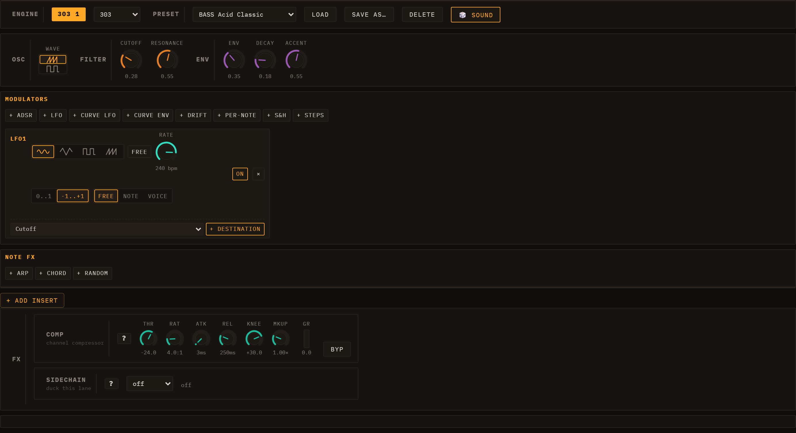
Above: TB-303 editor — Wave, Cutoff, Resonance, Env Mod, Decay, Accent, and a per-lane LFO.
The TB-303 is a monophonic, resonant bass synthesiser modelled on the Roland TB-303. It is the natural choice for acid bass lines but works equally well for aggressive leads and any sound that calls for a steep, self-oscillating filter sweep.
| Parameter | Description |
|---|---|
| Wave | Sawtooth or Square oscillator waveform |
| Cutoff | Filter cutoff frequency (0–100%) |
| Resonance | Filter Q — self-oscillates at high values |
| Env Mod | How far the filter envelope opens the filter per step |
| Decay | Filter envelope decay time |
| Accent | Per-step level: brightens the filter, bumps Q, raises output gain |
A note's slide flag means "slide into the next step". When the scheduler
emits step N it checks whether step N-1 carried a slide flag; if so, it ramps
the pitch from the previous note and skips the amp re-attack so the gate stays
open across the boundary. The outgoing step gets an extended gate (1.5× step
length) so the overlap is audible.
Accent is a per-step flag that simultaneously brightens the filter envelope, raises the resonance Q, and boosts the output gain — the classic 303 bassline punctuation technique.
The engine ships with 20+ presets from "BASS Acid Classic" to "LEAD Squelch". See Editing Clips for how to set slide and accent on individual steps.
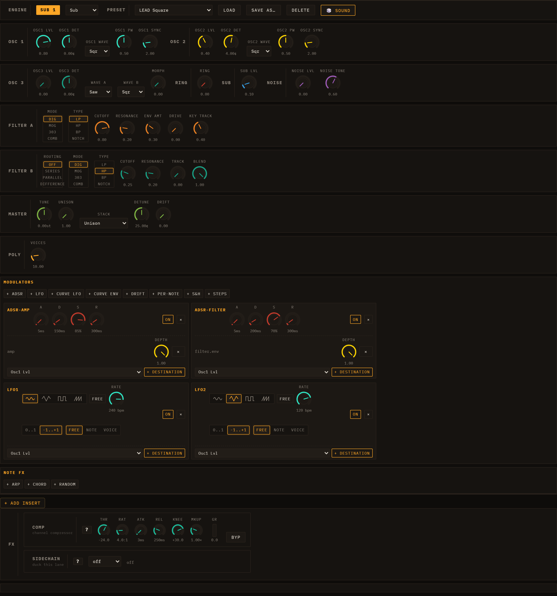
Above: Subtractive editor — OSC 1/2, Sub oscillator, Noise, Filter (with built-in envelope), Amp, and POLY controls.
The Subtractive engine is a classic analogue-style polyphonic synthesiser with two oscillators, a sub oscillator, a noise source, a resonant low-pass filter, and a full amplitude envelope. It is the most general-purpose engine in Loom and suits pads, leads, basses, and plucks.
For modulation routing see Modulation & Note FX.
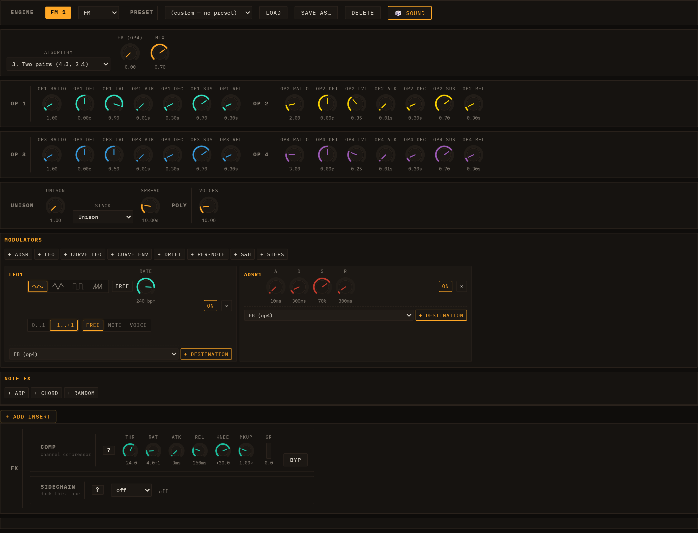
Above: FM editor — Algorithm selector, Op 1–4 (Ratio/Detune/Level/ADSR), global Mix and Voices.
The FM engine is a four-operator, DX7-style frequency-modulation synthesiser. Each operator is a sine oscillator with its own ADSR amplitude envelope and level; operators are wired together according to one of four algorithms.
| Parameter | Description |
|---|---|
| Algorithm | 1 = serial 4→3→2→1; 2 = three parallel mods → Op 1; 3 = two pairs; 4 = additive |
| FB (Op4) | Op 4 self-feedback — adds odd harmonics and edge |
| Op 1–4: Ratio | Frequency ratio relative to the played note (0.1–16×) |
| Op 1–4: Det | Per-operator detune in cents |
| Op 1–4: Level | Carrier output level or modulation index (modulators) |
| Op 1–4: ADSR | Per-operator amplitude envelope |
| Mix | Final output level (0–1) |
| Voices | Polyphony cap (1–16; default 6) |
FM suits metallic tones, electric pianos, bells, and evolving textures. Small ratio changes yield very different timbres; the preset library covers bells, organs, and electronic basses.
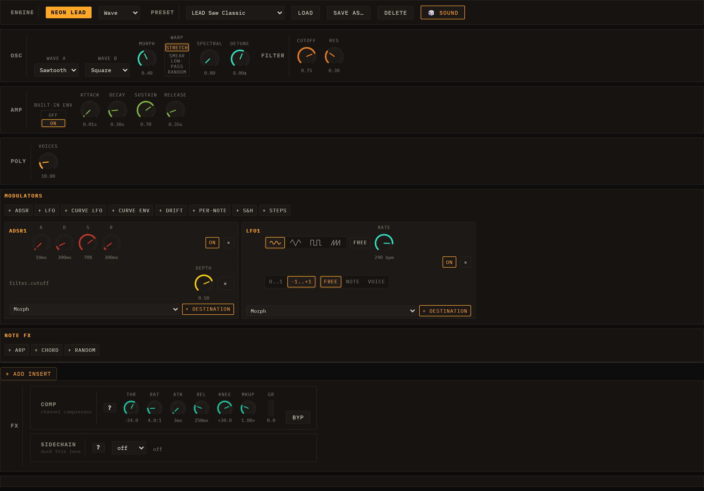
Above: Wavetable editor — Wave A/B selectors, Morph, Detune, Filter, Amp envelope, and Voices.
The Wavetable engine morphs between two pre-computed waveforms — Wave A and Wave B — using the Morph knob or an LFO/ADSR routed to it. Both waves are drawn from a fixed bank of eight anti-aliased tables: Sine, Triangle, Sawtooth, Square, Pulse (25%), Organ, Brass, and Vocal.
| Parameter | Description |
|---|---|
| Wave A / Wave B | Source waveforms to interpolate between |
| Morph | Crossfade position (0 = full Wave A, 1 = full Wave B) |
| Detune | Global detune in cents |
| Cutoff / Res | Resonant low-pass filter |
| Built-in Env | Toggle the built-in amp ADSR on/off |
| Attack / Decay / Sustain / Release | Amplitude envelope |
| Voices | Polyphony cap (1–16; default 8) |
Animating Morph with an LFO is the signature technique — sweeping from Sine to Sawtooth or Brass to Vocal while a note sustains produces evolving, living tones. See Modulation & Note FX.
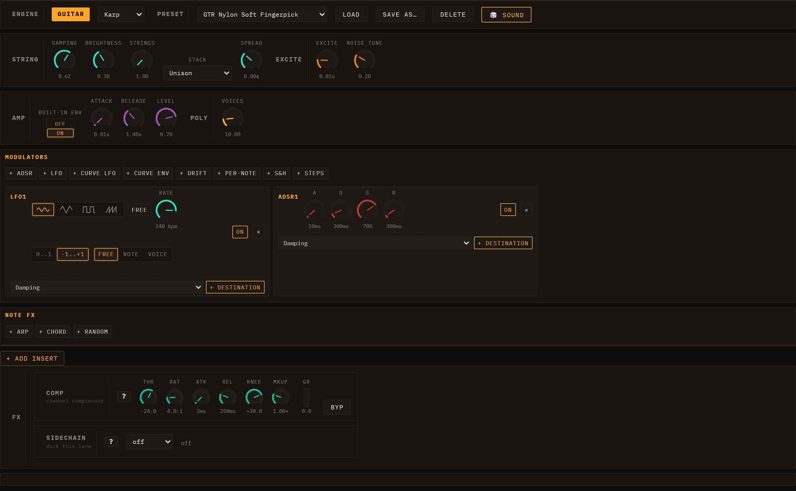
Above: Karplus-Strong editor — String section (Damping, Brightness), Excite section (Excite time, Noise Tone), and Amp controls.
Karplus-Strong is a physical-modelling engine that synthesises plucked-string sounds. Loom renders each note offline (sample-by-sample in JavaScript) into a buffer and plays it back through an amplitude envelope. This gives exact pitch at every frequency, natural high-harmonic roll-off, and no feedback runaway.
| Parameter | Description |
|---|---|
| Damping | T60 decay: 0 = long sustain (~4 s), 1 = muted (~0.12 s) |
| Brightness | Loop filter: 0 = dark/cello, 1 = open/metallic |
| Excite | Excitation burst length (pluck sharpness) |
| Noise Tone | Colour of the excitation noise (dark → bright) |
| Attack / Release | Amp envelope on buffer playback |
| Level | Output amplitude |
| Voices | Polyphony cap (1–16; default 8) |
Damping and Brightness are set per-note at the moment of the pluck (baked into the buffer). Level and its envelope are live AudioParams and can be modulated. Karplus suits acoustic bass, guitar, harp, and marimba-style sounds.
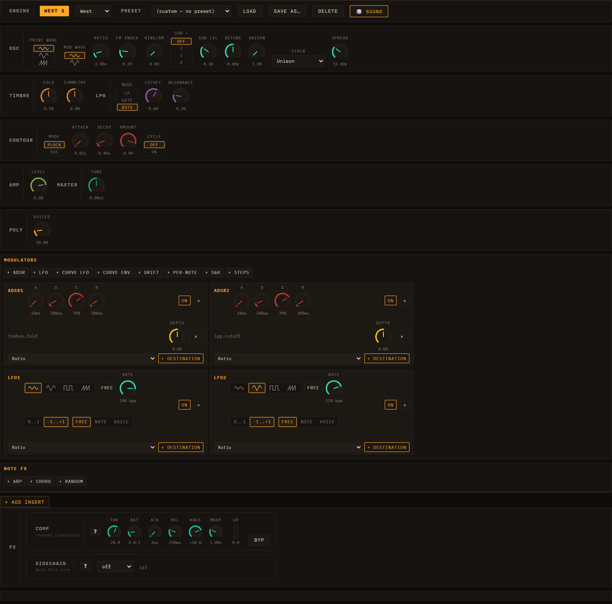
A Buchla-style "West Coast" voice: complex oscillator → wavefolder → low-pass gate, driven by a built-in AD contour.
The West Coast engine takes a fundamentally different approach to synthesis from the filter-based ("East Coast") engines above. Instead of shaping a harmonically-rich waveform by subtracting frequencies with a filter, it adds harmonics by routing an oscillator through a wavefolder and then taming the result with a low-pass gate. The result is highly percussive and organic — metallic plucks, woody tones, evolving bell-like pads, and abstract textures that are difficult to achieve with conventional subtractive synthesis.
The engine is monophonic (a single voice; legato mode is planned for a future update). FM here is native-linear, not through-zero.
The signal chain is: Complex Oscillator → Timbre (Wavefolder) → Low-Pass Gate (LPG) driven by an AD Contour.
Two cross-coupled oscillators produce the raw material. The principal oscillator's frequency is modulated by the modulator oscillator (linear FM), optionally ring-modulated, and a sub-harmonic divider can be added below.
| Parameter | Description |
|---|---|
| Princ Wave | Waveform of the principal oscillator: Sin, Tri, or Saw |
| Mod Wave | Waveform of the modulator oscillator: Sin or Tri |
| Ratio | Frequency ratio of the modulator relative to the principal (0.25–16×) — integer ratios produce harmonic tones; non-integers produce inharmonic, bell-like partials |
| FM Index | Depth of linear FM from the modulator into the principal (0–1) — higher values add more sidebands |
| Ring/AM | Amount of ring modulation mixed in (0 = off, 1 = full ring mod) |
| Sub ÷ | Sub-harmonic divider: Off, ÷2, ÷3, or ÷4 — adds a sub-oscillator one, two, or three octaves below |
| Sub Lvl | Output level of the sub-harmonic oscillator (0–1) |
| Detune | Fine-tune of the principal oscillator in cents (±50 ¢) |
The wavefolder processes the summed oscillator signal through a non-linear waveshaping curve. As the Fold amount increases it drives the signal harder into the curve, folding the waveform back on itself and adding a cascade of new harmonics. Accent (velocity ≥ 100) pushes the fold drive harder automatically.
| Parameter | Description |
|---|---|
| Fold | Drive into the fold curve (0 = gentle/clean, 1 = heavy folding/maximum harmonics) |
| Symmetry | DC bias applied before the folder — shifts the waveform asymmetrically for even-harmonic colouring (−1 to +1) |
A low-pass gate combines a resonant filter and a VCA in a single, vactrol-like element so that the contour simultaneously opens the brightness and the volume. The Mode selector determines how the contour is routed.
| Parameter | Description |
|---|---|
| Mode | LP — contour sweeps the filter only (VCA stays open); Gate — contour opens the VCA only (filter stays at its base cutoff); Both — contour drives both, the most classic "plonky" Buchla behaviour |
| Cutoff | Base cutoff frequency (0–1, exponential scaling from ~60 Hz to 18 kHz) |
| Resonance | Filter Q (0–1) — adds resonant emphasis at the cutoff |
A single AD (attack–decay) envelope generator, similar to the contour generator in a Buchla 281. It drives both the LPG filter and VCA according to the Mode setting above.
| Parameter | Description |
|---|---|
| Mode | Pluck — decay is gate-independent (fires and fades regardless of note length); Sus — holds at peak until the note ends, then decays |
| Attack | Rise time (1 ms – 2 s) |
| Decay | Fall time (5 ms – 4 s) — in Pluck mode this is the T60 envelope; in Sus mode this is the release time after gate-end |
| Amount | Peak level of the contour (0–1) — scales how far the LPG opens |
| Cycle | On — re-triggers the AD shape repeatedly while the note is held, turning the contour into a free-running LFO-like modulator |
| Parameter | Description |
|---|---|
| Level | Master output gain (0–1) |
| Tune | Global pitch offset in semitones (±12 st) |
The engine ships with 24 presets — spanning percussive bass plucks (BASS Fold Sub, BASS Growl FM), bells (BELL Metallic, BELL Crystal Ring), pads (PAD Fold Drone, PAD Glass Air), keys (KEYS Fold E-Piano, KEYS Marimba Fold), and abstract textures (FX Cycle Burst, FX Sci-Fi Cycle) — selectable from the lane's preset dropdown. Per-section knob accent colours group the COMPLEX OSCILLATOR, TIMBRE, LOW-PASS GATE, and CONTOUR sections visually.
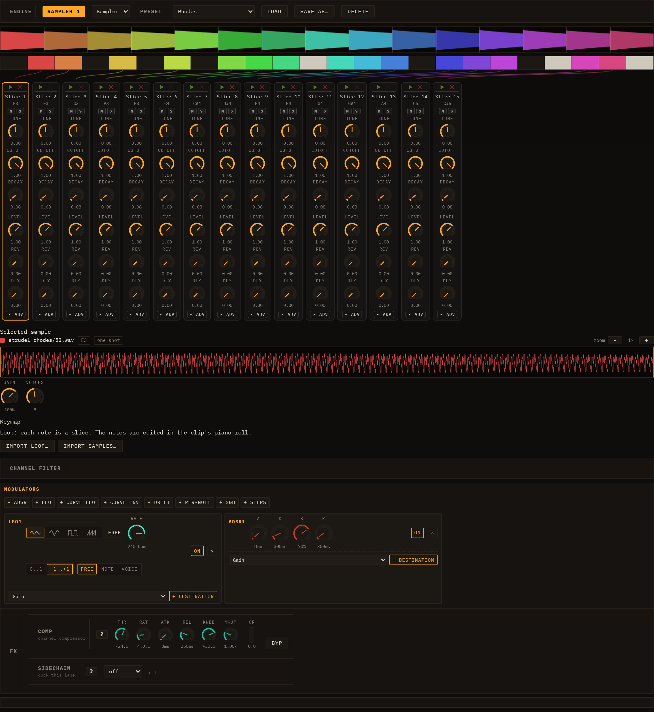
Above: Sampler editor — global Gain/Voices controls; per-pad controls appear once samples are loaded.
The Sampler engine plays back audio samples mapped across the keyboard. Each keymap zone (pad) has its own per-pad parameters read at trigger time, making it possible to tune, filter, and pan individual pads independently.
| Parameter | Description |
|---|---|
| Gain | Master output gain for the lane |
| Voices | Polyphony cap (1–16; default 8) |
Shown in the drum-voice rack once pads are mapped.
| Parameter | Description |
|---|---|
| Tune | Transposition in semitones (−24 to +24) |
| Cutoff / Res | Per-pad resonant low-pass filter |
| Attack / Decay | Per-pad amplitude envelope |
| Level | Per-pad output level |
| Pan | Stereo position |
| A / B | Send amounts to Send A (delay by default) and Send B (reverb by default) |
| Loop / Loop Start / Loop End | Loop mode (one-shot or loop-while-gated) and the loop region (start/end as a fraction of the sample) |
| Sample Start / End | Trim the played window — start/end as a fraction of the sample; draggable on the waveform in the Selected sample panel |
| Retrig | Poly (voices overlap) or Mono (re-hit cuts the previous voice) |
A Sampler lane with pads mapped to GM drum note numbers automatically enters drumkit mode and shows the drum-grid editor instead of the piano roll. For details on loading samples and building keymaps see MIDI & Samples.
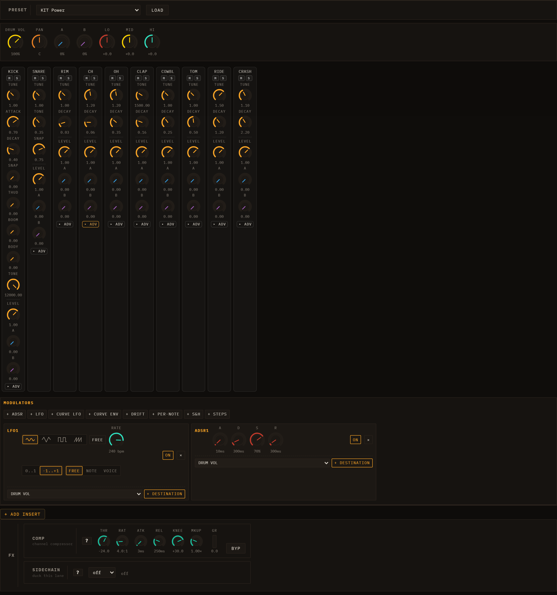
Above: Drums editor — Preset row, master bus knobs (Vol/Pan/Rev/Dly/Lo/Mid/Hi), per-voice rack with Tune/Decay/Rev/Dly controls per voice.
The Drums engine is a fully synthesised eight-voice drum machine — no samples required. All eight voices (Kick, Snare, Closed Hat, Open Hat, Clap, Cowbell, Tom, Ride) are built from oscillators, noise generators, and simple envelopes. Each voice routes through its own channel strip and then to a shared drum bus.
The per-voice rack exposes the key parameters for each voice:
| Voice | Key parameters |
|---|---|
| Kick | Tune, Attack (click), Decay, Start/End Freq, Sweep, Wave |
| Snare | Tune, Tone body, Snap (noise), Body Decay, Noise Decay, Noise Tone |
| Closed Hat | Tune, Decay |
| Open Hat | Tune, Decay |
| Clap | Tone, Decay, Sharp (filter Q) |
| Tom | Tune, Decay, Sweep, Start/End Freq |
| Cowbell | Tune, Decay, Detune |
| Ride | Tune, Decay |
The preset dropdown for any drum lane lists kits from three groups:
| Group | Kits | How it works |
|---|---|---|
| GM | KIT Standard, KIT Room, KIT Power, KIT Electronic, KIT TR-808, KIT Jazz, KIT Brush, KIT Orchestra | GM-programme aliases that map to the synth kits below |
| Synth | TR-909, TR-808, TR-606, CR-78, LinnDrum | 100% synthesised DSP — no samples required |
| Samples | TR-808 (samples), Acoustic (samples), Dirt (samples) | Real one-shot WAVs bundled with Loom |
Synth kits seed all eight per-voice parameters from the kit's characteristic values; you can edit individual voices on top and hit 🎲 Sound to randomise all voices at once.
Sample kits load the matching WAV for each voice (kick, snare, closed hat, open hat, clap, tom, cowbell, ride) from public/drumkits/ and rebuild the keymap fresh on every session load — you never need to re-import the files manually. Once a sample kit is selected, the lane uses the drum-grid editor and the full per-pad parameter rack, exactly like a Sampler lane in drumkit mode.
The sample WAVs are curated one-shots from the Dirt-Samples collection (used by TidalCycles) and classic TR-808 recordings. Full credits are in the repo README.md under "Credits — sample sources".
Note: sample kits are loaded by the Sampler engine under the hood. For the Sampler's own Instrument family selector (Drumkit / Melodic / Loop) and per-pad parameters, see MIDI & Samples.
The master bus row gives Vol, Pan, Rev, Dly, Lo, Mid, and Hi (±18 dB shelves) for the whole drum bus. These are automatable via Modulation & Note FX. Routing to the shared reverb and delay sends is covered in Mixing & FX.
Each drum voice has a Choke dropdown in the voice's advanced area of the per-voice rack. Voices assigned to the same non-zero choke group are mutually exclusive: triggering one immediately cuts the tails of all other voices in the same group. A voice assigned to group 0 (the default) is never choked by anything.
The default configuration is closed hat and open hat both in group 1, which gives the classic hi-hat choke behaviour — hitting the closed hat silences the open hat's ring, just as on a real drum kit. You can reassign any voice to any group number to create other exclusive pairs, for example a conga and cowbell that cannot overlap.
| Engine | Best for | Standout parameters |
|---|---|---|
| TB-303 | Acid bass lines, resonant leads | Slide, Accent, Env Mod |
| Subtractive | Pads, leads, basses, general-purpose | Dual OSC detune, Filter Drive, Key Track, POLY mode |
| FM | Bells, electric pianos, metallic textures | Algorithm, per-operator Ratio, FB feedback |
| Wavetable | Evolving tones, digital leads, pads | Morph (A→B crossfade), 8-waveform bank |
| Karplus-Strong | Plucked strings, guitar, harp | Damping (sustain), Brightness, Excitation |
| West Coast | Percussive plucks, metallic tones, evolving textures | Wavefolder (Fold), LPG Mode, Contour Cycle |
| Sampler | Any audio, drum kits with per-pad control | Per-pad Tune/Filter/Envelope, Loop mode |
| Drums | Synthesised drum machine, percussion | 8-voice synth rack, kits-as-presets, bus EQ, Choke groups |
Every clip in Loom holds a sequence of notes. To edit those notes, click the body of any filled cell in the session grid — anywhere except the ▶ play icon or the ✕ delete cross in its corner (clicking ✕ deletes the clip outright, with no confirmation). You can also right-click a filled cell and choose Open editor. The inspector panel opens below the grid and the editor renders inside it. Closing the inspector does not stop playback — launching and editing are independent.
Melodic lanes (TB-303, Subtractive, FM, Wavetable, Karplus, West Coast, Sampler) open the piano-roll. Drum-machine lanes and sampler lanes that have a drum kit loaded open the drum-grid. If you want to switch between the two views for a given clip, click the ↔ Editor button in the inspector toolbar.
See Sessions, Lanes, Clips & Scenes for how clips are organised, and Engines for the controls each engine exposes.
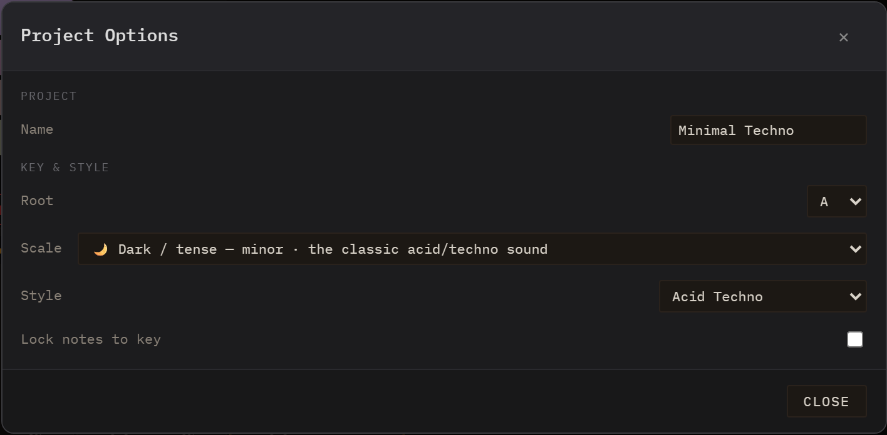
The project key/style bar sits in the transport strip next to Meter; the 🔒 Scale button and the 🎲, Vary, Mirror, Reverse, and Chords controls appear in the clip-editor toolbar.
Loom's musical-assistance layer works from a single shared project key and style setting. Everything that generates or reshapes notes — the random generator, the examples gallery, the pattern transforms, the chord harmoniser — reads that setting and stays in key automatically. You can override it on a per-lane basis when one part needs to inhabit a different harmonic world.
In the top transport bar, next to the Meter control, a button displays the current project tonality and the scale-lock state — for example 🎼 A minor · Acid / Techno · 🔓. The 🔒/🔓 glyph at the end tells you at a glance whether the scale lock is on, without opening anything. Click the button to open the key/style panel.
The panel has three pickers and a lock toggle:
Every other musical-assistance feature — the piano-roll scale highlight, the generator, the examples, the transforms, and the chord maker — respects the active root and scale. Closing the panel without choosing commits no change.
The lane inspector shows a line such as Key: inherits A minor · Override. Click Override to assign a different root and scale to that lane alone, so one part can be in a different key while the rest of the session stays in the project key.
Inside the piano-roll, in-scale pitch rows are highlighted and the keyboard strip on the left colours in-scale keys — the tonic row and key are the brightest. This gives you an instant visual map of which notes belong to the current key.
A 🔒 Scale button in the piano-roll toolbar controls the scale lock, mirroring the Scale lock checkbox in the project key/style panel — both write the same global setting. The lock is off by default: a fresh session never constrains what you play, and a saved session always loads unlocked, so the lock can never surprise you by being on. Switch it to 🔒 whenever you want a safety net. When locked:
With the lock on it is impossible to place a wrong note; toggle it back to 🔓 (the default) for chromatic freedom — accidentals, blue notes, deliberate dissonance. The arrow-key nudge (semitone up/down) intentionally ignores the lock in both states, so you can always make precise micro-adjustments with the keyboard.
The 🎲 (dice) button in the clip-editor toolbar fills the current clip with a freshly generated musical part in the project key, scale, and style:
The result is not flat random: it is constrained to the scale, shaped by the style, and proportioned to the clip length. Press 🎲 again for another variation; change the global Style in the key/style panel for a different character while keeping the same root and scale.
An inline dropdown next to 🎲 in the toolbar lists factory riff examples grouped by style (Acid / House / Synthwave / Lo-fi section headers). The list is filtered by editor type: melodic editors show basslines and melodies; drum editors show beat patterns.
Selecting an example:
Two additional controls sit at the bottom of the dropdown:
.json file that you can share or import into another browser.Three buttons in the toolbar reshape the current pattern — all results stay within the project key and scale.
| Button | Name | What it does |
|---|---|---|
| Vary | Musical variation | Nudges some pitches to neighbouring scale degrees and lightly adjusts rhythm and velocity; the overall character and contour are preserved. |
| Mirror | Melodic inversion | Flips the melodic contour so that rising lines fall and falling lines rise, mirrored around the first note of the clip. |
| Reverse | Retrograde | Plays the pattern backwards in time — the last note becomes the first. |
All three are undoable with Ctrl+Z / Cmd+Z.
The Chords button harmonises the current melodic clip. For each bar it picks the most characteristic diatonic triad implied by the bar's melody notes, then writes an accompaniment using a rhythm pattern drawn from the global style — for example offset stabs in House, sustained pads in Lo-fi, driving eighth notes in Synthwave.
When you click Chords a small dialog asks which lane to write the chord part to: pick an existing melodic lane or let Loom create a new lane labelled "Chords". The original clip is not modified.
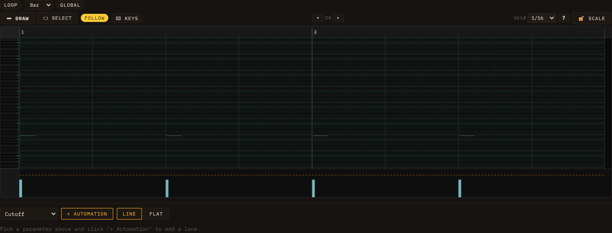
The piano-roll is a two-axis canvas: time runs left-to-right, pitch runs bottom-to-top. A vertical keyboard on the left names the rows; a time ruler at the top marks bars and beats.
Scrub vertically on the time ruler to zoom the time axis; scrub horizontally on the ruler to pan. Scrub the keyboard strip vertically to zoom the pitch axis. The native scroll bars pan both axes. Zoom state is saved per clip and restored when you reopen it.
The drum-grid and the audio-clip editor have the same horizontal zoom and scroll: their fixed parts (the voice-name labels on the drum grid, the waveform header on an audio clip) stay pinned on the left while the timeline content scrolls and zooms beside them. The loop brace tracks the zoom in every editor.
A session-global Follow toggle keeps the playhead in view: while it's on, every clip editor auto-scrolls horizontally to follow playback. It is on by default — turn it off when you want to inspect one region while the transport runs elsewhere. The setting is shared across all editors and saved with the session.
The default tool is Draw. Click an empty area of the grid to place a note at the snap resolution (default: 16th notes). Drag right while placing to extend its duration. Click and drag an existing note's right edge to resize it. Click and drag the body of a note to move it. Alt-click or right-click a note to delete it.
Click the Select tool button in the toolbar to switch. In Select mode, click a note to select it. Drag on the grid background to draw a marquee rectangle; every note whose body intersects the rectangle is selected. Click empty space to deselect all.
With notes selected you can:
The tool choice and clipboard contents persist across clip re-opens and across clips, so you can copy from one clip and paste into another.
When the piano-roll has focus you can record notes directly from the computer keyboard:
| Key row | Notes |
|---|---|
a s d f g h j k (home row) — white keys |
C D E F G A B C |
w e t y u (upper row) — black keys |
C# D# F# G# A# |
z / x |
Shift input octave down / up |
Pressing a key auditions the note immediately so you can hear it, advances the input cursor by one snap step, and records the note into the clip at the cursor position. Duration equals one snap step (quantised on key-up). This lets you step-enter a melody quickly without a MIDI controller.
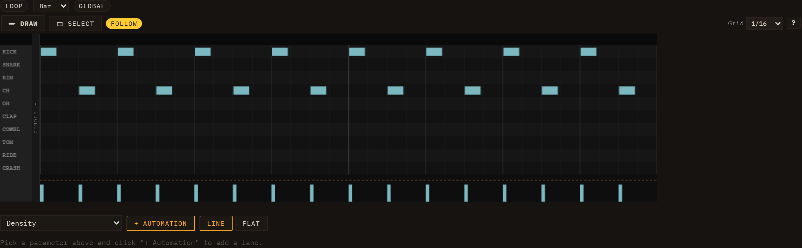
The drum-grid is a canvas editor where rows correspond to drum voices (kick, snare, hi-hat, etc.) and columns correspond to time positions. Each hit is placed at a precise tick within the clip.
A resolution selector at the top of the editor sets the snap and the column width. Available resolutions are:
| Value | Description |
|---|---|
| 1/4 | Quarter notes |
| 1/8 | Eighth notes |
| 1/8T | Eighth-note triplets |
| 1/16 | Sixteenth notes (default) |
| 1/16T | Sixteenth-note triplets |
| 1/32 | Thirty-second notes |
| free | No snap — place hits at any tick |
You can mix resolutions across clips; each clip stores its own gridResolution setting.
Click an empty cell to place a hit. Click an existing hit to remove it. In free mode, click anywhere in the row — the hit lands at the exact tick under the pointer with no snapping.
Drag on the canvas background to draw a marquee rectangle. Hits whose row and time position intersect the rectangle are selected. With a selection active:
Selection, clipboard, and group-move all operate on row indices, not MIDI numbers, so patterns copy cleanly even between kits that map voices to different MIDI notes.
A vertical playhead line moves across the canvas in real time while the clip is playing, driven by the sequencer's look-ahead clock. It updates on every redraw tick and resets to the left edge when the clip stops.
Next to the Length (bars) field in the inspector toolbar sit two buttons, *2 and /2, that time-scale the whole clip in a single, undoable step — Ableton's "double / halve clip tempo" applied to the open clip.
*2 (Double tempo — compress notes & halve clip length) — packs the clip into half the time: every note's start and duration is halved, the loop region scales with it, the clip's length in bars halves, and any clip automation is compressed to match. The pattern plays back twice as fast./2 (Halve tempo — stretch notes & double clip length) — the inverse: notes, loop, length and automation all double, so the pattern plays back half as fast over twice the bars.Because every part of the clip is scaled together — notes, loop brace, length and automation — the groove keeps its shape; only its speed (and the bars it occupies) changes. The buttons appear for note and drum clips; a pure audio channel has no notes to scale, so they are hidden there. The whole rescale is one entry in the global undo history, so a single Ctrl+Z restores the original timing.
A loop brace sits above every clip editor — piano-roll and drum-grid — as a narrow strip spanning the full clip length. It lets you mark an A–B sub-region and repeat just that portion while the clip plays.
The brace strip has two drag handles (left = A, right = B) and a Loop toggle button. To use it:
Click Loop again to disable it. The clip reverts to playing its full length; the A and B positions are remembered so you can re-enable the same region later.
The loop region works the same way for all clip types:
The brace lives on the note/drum editor. A pure audio channel (the waveform-only audio-clip editor) does not show a brace; to gain per-region control over an audio loop, bring it in through the Sampler's Loop family, which slices it into a note clip with a piano-roll (see MIDI & Samples — Sampler).
The loop region is per-clip and saved with the session. Two clips in the same lane or scene can each have their own independent A–B region, or none at all.
All loop-region edits (moving handles, toggling) are part of the global undo history (Ctrl+Z / Cmd+Z).
For how to use an arrangement-wide A–B loop brace that repeats a section across all lanes at once, see Performance & Arrangement.
Any clip that references an audio buffer shows a waveform header above its editor — a peak view of the buffer with a bar/beat ruler, slice markers (orange), and a live playhead. It appears in two situations:
To bring a loop into a session as a tempo-locked audio channel, see MIDI & Samples — Audio channel (the + Audio control, the waveform header, the Warp tempo-lock). To chop a loop into individually editable note slices, load it through the Sampler's Loop family instead.
Above: piano-roll editor. The strip beneath the note grid is the velocity lane — one vertical bar per note, height proportional to velocity.
Every note in Loom carries a velocity value from 0 to 127. Velocity is set when you draw a note (default: 90), adjusted in the velocity lane, and captured automatically from MIDI import. It affects the sound in two complementary ways:
velToGain). A velocity of 1 is near-silent; 127 is the loudest a note can be. Notes at the default of 90 sit just above the mid-point of the range, so there is clear headroom in both directions.Each note's fill colour shifts along a blue → yellow ramp as its velocity increases. Low-velocity notes are deep blue; high-velocity notes are warm yellow. The transition is weighted so the blue half of the range covers roughly velocities 0–64 and the yellow half covers 64–127. Accented notes (≥ 100) are additionally outlined with a white border — colour alone does not distinguish accent from non-accent.
Below the note grid (piano-roll) or the drum-voice rows (drum-grid) is the velocity lane: a row of vertical bars, one per note, anchored at the note's start position. Bar height is proportional to velocity. A dashed horizontal line across the lane marks the accent threshold (velocity 100) so you can see at a glance which notes are accented. The lane scrolls horizontally in sync with the grid.
You interact with the velocity lane by dragging the bars:
When several notes share the same start position (a chord), their bars are fanned a few pixels apart in the lane so each one remains individually grabbable.
All velocity edits are undoable (Ctrl+Z / Cmd+Z) in the same undo history as note placement and movement.
Every lane has two signal-processing layers that sit before its engine's audio output and around its note stream: Modulators shape sounds over time by continuously driving engine parameters, and Note FX transform the note events before they reach the engine. Both are per-lane and saved with the session.
The FM engine editor. The MODULATORS section (LFO1 + ADSR1) and the NOTE FX row are visible at the bottom of the panel.
Open any lane's engine editor and scroll to the MODULATORS section. Press + LFO or + ADSR to add a modulator; you can add as many as you need. Each modulator appears as a card with its own controls, an ON / OFF toggle, and a × remove button.
An LFO generates a periodic waveform that you route to one or more target parameters.
| Control | Description |
|---|---|
| WAVE | Waveform shape: Sine, Tri, Sqr, or Saw |
| RATE | Free rate in Hz (0.01–40 Hz, default 4 Hz) |
| RATIO | Musical division for BPM-sync mode (e.g. 1/4, 1/8, 1/8T, 1/16.) |
| FREE / SYNC | Toggles between free-running Hz rate and BPM-locked ratio. In FREE mode the RATE knob is shown; in SYNC mode the RATIO selector replaces it. |
| POLARITY | -1..+1 (bipolar, default) oscillates symmetrically around the param's centre. 0..1 (unipolar) only pushes the parameter upward. |
| TRIG | Free — the LFO phase runs continuously regardless of note triggers, like a classic analogue LFO. Note — phase resets on every note-on, so the LFO peak always lands at the start of each note. Hidden when scope is PER-VOICE (see below). |
| SCOPE | Shared — one LFO voice runs for the whole lane. PerVoice — an independent LFO is spawned for each played note and lives for the duration of that note. |
Musical difference between Shared and PerVoice: a shared LFO on a polyphonic lane makes all voices wobble together in phase — the whole chord breathes as one. PerVoice gives each note its own independent modulation cycle, so fast staccato chords shimmer individually rather than in unison.
An ADSR produces a classic Attack–Decay–Sustain–Release envelope that fires once on each note trigger and follows the note's gate duration. Its default scope is PerVoice, which is almost always what you want: every note gets its own independent envelope.
| Control | Range | Default |
|---|---|---|
| A (Attack) | 1 ms – 2 s | 10 ms |
| D (Decay) | 1 ms – 4 s | 300 ms |
| S (Sustain) | 0 – 100 % | 70 % |
| R (Release) | 1 ms – 8 s | 300 ms |
You can switch an ADSR to Shared scope if you want a single envelope that re-triggers on each note but whose shape is not tied to any individual voice. In practice PerVoice is the natural choice for most envelopes.
Below each modulator card's controls is a destination list. To route the modulator:
The depth knob scales the modulator's effect. A value of 1.0 means the full output range of the modulator sweeps the full range of the destination parameter (in the parameter's native units). –1.0 inverts the modulation direction. Multiple destinations can share the same modulator at different depth values.
Remove a destination with its × button. Remove the whole modulator with the × on the card header.
The NOTE FX section sits directly below MODULATORS. Note FX processors intercept the lane's note stream before it reaches the engine, transforming which notes are played and when. Add a processor with + Arp or + Chord. Each processor shows an ON / OFF button and a × remove button.
Note FX are per-lane and persist with the lane's engine state. Loading a demo resets them to the demo's configuration.
The Arp takes each held note and generates a rapid sequence of notes from it according to a scale and direction pattern.
| Control | Options / Range | Description |
|---|---|---|
| PATTERN | up, down, updown, random, cosmic | Direction of the arpeggio. cosmic adds occasional octave jumps and random steps for an unpredictable feel. |
| SCALE | major, minor, pentMinor, phrygian, chromatic | Scale from which arp notes are drawn, starting from the held root note. |
| RATE | free, 1/4, 1/8, 1/8t, 1/16, 1/16t, 1/32 | Step rate in musical divisions (BPM-synced), or free Hz. |
| OCT | 1–4 | Number of octaves the arp spans. Higher values cycle the scale across more octaves before repeating. |
| GATE | 0.05–1.0 | Fraction of the step interval during which each arp note is held. Lower values create a more staccato feel. |
| FREE Hz | 0.5–32 Hz | Rate used when RATE is set to free. |
The Arp fires as many notes as fit inside the original note's gate duration, so longer notes produce longer runs.
The Chord processor replaces each incoming note with a chord built on that note as the root.
| Control | Options | Description |
|---|---|---|
| CHORD | maj, min, maj7, min7, sus2, sus4, dim | Chord voicing to generate |
| OCT | –2 to +2 | Octave offset applied to all notes in the chord |
All notes in the chord share the original note's timing and gate length.
Loom records parameter automation in two ways:
Real-time knob recording (Performance view): in the session/I-O header row, make sure the REC mode selector beside ● REC is set to 🎛 take (the default), then press ● REC to arm recording and press Play. While recording in take mode, every knob you move and every clip launch is captured as automation in the current take. Automation is written at a sub-step resolution derived from the BPM. Press ● REC again to disarm. (The other two REC modes — ⏱ live and ⚡ offline — export WAV audio instead of recording automation; see Transport for the unified REC group.)
Per-clip envelopes (Session view): each clip can carry automation lanes independent of the Performance take system. Open the inspector for a clip and scroll below the note editor to the automation section. Select a parameter from the dropdown and click the add button to create an envelope lane for that clip. The envelope draws a curve over the clip's length (in bars) and plays back each time the clip loops. Envelopes are stored alongside the clip's notes in the session file.
When you move a clip to a lane running a different engine, envelopes whose parameter ID no longer exists in the new engine are disabled automatically (they remain in the clip but do not play back until re-enabled or deleted).
See also: Engines for the parameters you can modulate, Mixing & FX for lane inserts and master FX whose parameters also appear as modulation destinations, and Transport for the REC button and Performance view.
Every lane in Loom has its own signal path from the synthesis engine through to the master output. This chapter explains how that path is structured, what controls are available per lane, and how the shared Master FX panel ties everything together.
Lane engine → lane insert chain → channel strip (EQ → comp → level → pan → mute → duck) → master bus
├──→ Send A (gain) ─┐
└──→ Send B (gain) ─┤
master bus → master insert chain → master compressor → output Send A / Send B returns ──┘
In short: the engine's audio passes through any per-lane inserts first, then the channel strip where EQ, sends, pan, and level are applied. The processed signal joins the master bus, which runs through the master insert chain and the master compressor before reaching the speaker. The two Send A / Send B buses are parallel return channels: each lane feeds them a post-fader amount, and each send runs its own insert chain (seeded A = Delay, B = Reverb) before returning to the master.
Each lane owns a ChannelStrip. Its controls are visible below the session grid in the lane's row.
The vertical slider sets the lane's output gain as a linear multiplier (0–1 = silence to unity; the percentage label reflects the current value). This is the last gain stage before output, applied after EQ and the per-lane compressor.
The PAN knob positions the lane in the stereo field. Centre (0) is the default; turning it left or right continuously shifts the image. The pan value is automatable and can be modulated — see Modulation & Note FX.
M silences the lane by zeroing its mute gain node. S solos the lane: all other lanes are muted in the UI while solo is active. Both controls affect what the sidechain tap feeds downstream — a muted lane's tap still carries pre-mute signal so sidechain routing remains stable.
The three EQ knobs apply before the per-lane compressor:
| Knob | Filter type | Centre frequency | Notes |
|---|---|---|---|
| LO | Low-shelf | 200 Hz | Boost or cut lows; default ±0 dB |
| MID | Peaking | 1 000 Hz | Q = 1; adds presence or scoops the midrange |
| HI | High-shelf | 4 500 Hz | Boost or cut highs and air |
All three bands are ±dB adjustments. EQ gain AudioParams are exposed to modulation so you can automate filter sweeps from the modulation panel.
The two send knobs — A and B — control how much of this lane's post-duck signal is fed into the two shared send buses. They replaced the old fixed REV/DLY knobs. Send A and Send B are general-purpose return channels, seeded A = Delay and B = Reverb, but you can change what effect lives in each — see Send A / Send B return modules. The knobs are independent wet levels: 0 = dry only, higher values mix more of the lane into that send's effect. Sends are post-fader, so they follow the lane's level and sidechain ducking. (Saved knob ids are mix.<lane>.sendA / mix.<lane>.sendB; old saves with …rev / …dly amounts migrate automatically — reverb→B, delay→A.)
Every lane also has a private insert chain that sits before the channel strip — the engine's audio passes through it first. If you open the lane's inspector and add FX to its insert list, those effects process the lane signal exclusively and do not affect any other lane.
Inserts vs sends: an insert is a serial in-line processor that the signal passes through; a send is a parallel path that taps a copy of the signal into a shared return. Use inserts for tone-shaping a single lane; use sends when several lanes should share one effect (a common reverb space, a tempo-synced delay). Loom no longer privileges any effect — reverb and delay are ordinary inserts too, and they just happen to be the default residents of the Send A / Send B return chains.
The same picker everywhere. Every insert rack — per lane (including audio lanes), on each send return, and on the master — draws from one unified effect picker: Filter (multifilter), Distortion, Reverb, Delay, Compressor, and Limiter. See Master FX panel below for each effect's parameters. Any insert's parameters are modulation and Performance-automation destinations, wherever the insert sits.
The master bus has its own strip at the foot of the scenes column of the mixer row — a full column laid out like a lane strip, so it lines up with them: a MASTER label, an EQ section (HI / MID / LO), an FX button (in the lane's SEND slot — the master has no sends), a PAN knob, a Mute button (no Solo — meaningless on the master), and a fader that mirrors the master Volume plus a VU meter. The master EQ, pan and mute shape the whole mix; they are saved with the session and the EQ/pan are undoable like any knob. Click the FX button to open the Master FX panel below the grid (click again to close it). (The panel's content — SENDS, MASTER COMP, INSERTS — was previously a separate "Master FX" tab; the controls are identical, only the way you open them changed.)
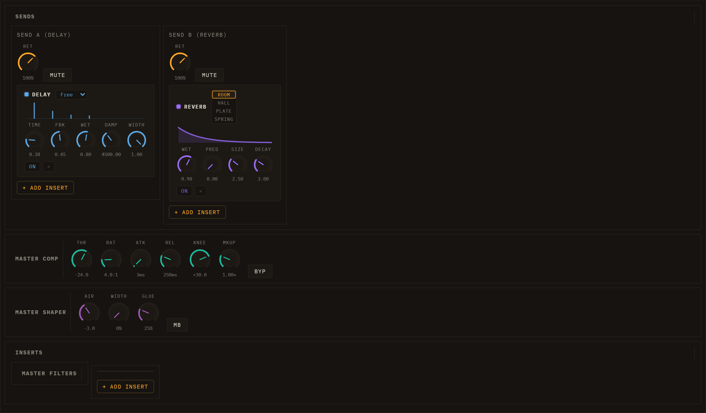
The SENDS section shows the two send buses as return modules. Each module is a simple return — a return level, a mute, and an insert rack — with no EQ or pan of its own. Whatever effects sit in a send's rack process everything the lanes send into it; the per-lane A / B knobs set how much each lane contributes. By default Send A holds a Delay and Send B holds a Reverb, but you can add, remove, reorder, or replace inserts in either rack from the same picker used everywhere else — so a send can carry a whole chain (say a filter into a delay), not just one effect.
The default reverb and delay expose the parameters below (and behave like any other insert — bypass per slot, modulatable params, etc.).
REVERB parameters:
| Param | Range | Description |
|---|---|---|
| Wet | 0–1.5 | Wet output level |
| PreD | 0–0.5 s | Pre-delay before the reverb tail starts |
| Size | 0.05–8 s | Impulse response length (room size) |
| Decay | 0.1–10 | Tail decay shape (higher = longer tail) |
The reverb is a convolution reverb with a procedurally generated impulse response. Size and Decay rebuild the impulse in real time when adjusted.
DELAY parameters:
| Param | Range | Description |
|---|---|---|
| Time | 0.01–2 s | Delay time. A SYNC toggle on the delay insert locks the time to the project tempo and re-locks whenever the BPM changes |
| Fbk | 0–0.95 | Feedback amount |
| Wet | 0–1.5 | Wet output level |
| Damp | 200–12 000 Hz | Low-pass filter on the feedback loop; lower values darken repeats |
The master compressor sits at the tail of the master chain, after all inserts. It uses the same CompBlock as the per-lane strip compressor, so the parameters are identical:
| Param | Range | Default | Description |
|---|---|---|---|
| Bypass | on/off | on | Pass-through when on |
| Threshold | −100 to 0 dB | −24 dB | Level above which compression starts |
| Ratio | 1–20 | 4 | Compression ratio |
| Attack | 0–1 s | 0.003 s | Gain reduction onset time |
| Release | 0–1 s | 0.25 s | Gain recovery time |
| Knee | 0–40 dB | 30 dB | Transition softness around the threshold |
| Makeup | ~0–4 (linear) | 1 | Post-compression gain, up to about +12 dB |
The master compressor is bypassed by default. Enable it for glue and loudness control on the final mix, or to tame transient peaks before export. See Saving & Export for how the master bus feeds the offline render.
Below MASTER COMP, the INSERTS section holds the master insert chain. Add a slot from the picker and pick its type. The same six plugin types are available in every rack — per lane, per send, and here on the master:
Filter (multifilter)
Distortion (Dist)
Reverb — same parameters as the Send B reverb above (Wet, PreD, Size, Decay). Use as an insert to reverb the full master rather than via a send.
Delay — same parameters as the Send A delay (Time + SYNC, Fbk, Wet, Damp). Use as an insert for a master-bus slapback or stutter.
Compressor — the same CompBlock dynamics compressor as the channel-strip and master compressors, now insertable anywhere. Params: Bypass, Threshold, Ratio, Attack, Release, Knee, Makeup (see MASTER COMP for ranges).
Limiter — a brickwall limiter (ratio 20:1, hard knee, near-zero attack) for catching peaks. Params: Ceiling (the level it will not exceed) and Release.
Slots in the chain are ordered in series: the output of each slot feeds the input of the next. Each slot has a bypass toggle so you can A/B it without removing it. Individual slots can be removed; adding the same type multiple times is allowed.
The master insert chain processes the full mixed signal, after the EQ/pan of the master strip and before the master compressor — distinct from the Send A/B returns, which receive per-lane amounts and sum back into the master independently.
Loom includes a sidechain ducking system. Any lane's channel strip can be ducked by the signal level of another lane (the source). The ducker follows the source lane's envelope via a full-wave rectifier and two smoothing filters, then reduces the target lane's gain proportionally:
duckGain ≈ 1 − depth × env(source)
Sidechain parameters (set per lane in the lane inspector):
| Param | Range | Default | Description |
|---|---|---|---|
| Source | lane selector | — | Which lane's post-mute tap drives the duck |
| Depth | 0–1 | 0.6 | How deep the gain dips at full envelope |
| Attack | s | 0.005 s | How quickly the ducker opens (gain rises) |
| Release | s | 0.25 s | How quickly the ducker closes (gain falls) |
| Threshold | dB | −40 dB | Source envelope must exceed this to duck at all |
A typical use case is kick-drum ducking: set a bass or pad lane's sidechain source to the kick lane. Every kick hit momentarily ducks the bass, creating a pumping effect common in electronic music. Because the tap is taken from the source lane post-mute (but pre-duck), muting the source stops the ducking without feedback loops.
The sidechain bus is separate from the compressor block available on each channel strip. The per-lane compressor (CompBlock) is a standard dynamics compressor in the signal path; the sidechain ducker is a parallel envelope-follower that modulates gain. Both can be active simultaneously.
For engine-level sound design that feeds the channel strips, see Engines. For LFO and ADSR modulation of EQ, sends, pan, and other AudioParams, see Modulation & Note FX.
This chapter covers two ways to bring external material into a Loom session: importing a Standard MIDI File to populate lanes and clips automatically, and loading audio samples into the Sampler engine to build melodic instruments or drum kits.
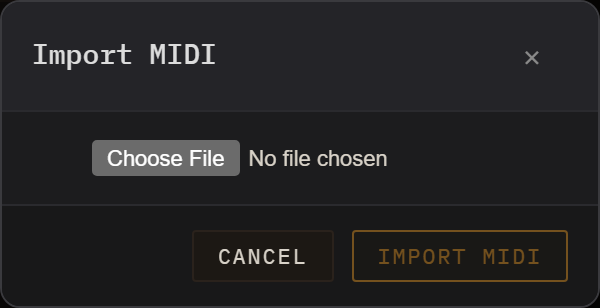
The MIDI Import panel lives in the toolbar at the top of the screen, next to the demo picker. Click MIDI Import to expand it.
Click the file picker and choose a .mid or .midi file. Loom reads the file immediately — no server, no upload. The parser extracts every track's name, General MIDI programme number, and all note-on/note-off pairs (converted to start tick, duration, MIDI note, velocity, and channel). Only the first tempo event in the file is used; if no tempo is present, the session BPM stays as it is.
Empty tracks (those with no note events) are silently skipped.
After parsing, a row appears for each non-empty track showing:
Click Import MIDI. A confirmation dialog asks whether to Add or Replace:
Loom creates one lane per selected track. The lane's name is taken from the matched preset (e.g. "TB Bass"), while the clip inside it keeps the original track name. If the file contained a tempo, the session BPM is updated to match. The import launches the new scene immediately.
The conversion scales MIDI ticks to Loom's internal grid (based on quarter notes divided into four 16th steps), so the notes land on the correct beats regardless of the file's tick resolution.
See Engines for what each engine sounds like, and Sessions, Lanes, Clips & Scenes for how to rearrange lanes and scenes after import.
The Sampler is a polyphonic playback engine that maps audio across the keyboard and plays it back at the correct pitch per note. A Sampler lane can be three things — a melodic instrument (samples spread across ranges of keys), a drumkit (one sample per key), or a loop (a sliced loop played as a sequence of notes) — and all three share one inspector layout.
The Sampler's bundled instruments — drumkits, melodic instruments, and loops — are its presets: pick one straight from the standard PRESET dropdown at the top of the inspector (grouped Drumkit / Melodic / Loop). Selecting one downloads + decodes its WAVs into IndexedDB (so it persists across reloads) and loads it. There is no separate picker. Loom ships ready-made kits (TR-808, Acoustic, Dirt), melodic instruments, and loops — all working on the live deploy without a manual import.
Whatever you load, the inspector has the same shape:
Every sound is keyed by its own note, so each pad / zone / slice has its own parameters and mute-solo — nothing is shared between sounds.
Import samples… (multi-select) decodes each file, stores it in IndexedDB (so it persists across reloads), and adds it as a new melodic zone spanning the full keyboard with the root at middle C (MIDI 60); narrow each zone's root and low/high boundary in the sample editor. On a drumkit, the ＋ tile clones the last pad onto the next free key.
A sound's keymap entry has a root note and a low/high key range. When a note falls in the range, the sample plays at a rate of 2^((midi − rootNote) / 12) — equal-temperament repitching — so a melodic instrument's zones span the keyboard chromatically while a drumkit pad or a loop slice sits on a single key.
Every sound — a drumkit pad, a melodic zone, or a loop slice — has its own set of parameters, all read at trigger time:
| Parameter | Range | Default | Description |
|---|---|---|---|
| TUNE | −24 to +24 st | 0 | Pitch offset in semitones, applied on top of keymap repitch |
| CUTOFF | 0–1 | 1 | Lowpass filter cutoff (0 ≈ 60 Hz, 1 = fully open) |
| RES | 0–1 | 0 | Filter resonance |
| ATTACK | 0.001–2 s | 0.005 s | Amplitude envelope attack time |
| DECAY | 0.005–4 s | 0.08 s | Release tail after the gate closes |
| LEVEL | 0–1.5 | 1 | Pad output level |
| PAN | −1 to +1 | 0 | Stereo pan position |
| REV | 0–1 | 0 | Send level to the lane's reverb insert |
| DLY | 0–1 | 0 | Send level to the lane's delay insert |
| LOOP | Off / On | Off | When On, the sample loops while the gate is held |
| LSTART | 0–1 | 0 | Loop start point as a fraction of sample duration |
| LEND | 0–1 | 1 | Loop end point as a fraction of sample duration |
| START | 0–1 | 0 | Trim in — playback start as a fraction of sample duration |
| END | 0–1 | 1 | Trim out — playback end as a fraction of sample duration |
| RETRIG | Poly / Mono | Poly | Mono cuts the previous hit on re-trigger; Poly layers them |
These live in each channel strip — drumkit, melodic, and loop all share the same per-channel rack (there is no eight-pad limit and no separate knob row).
A drumkit is one sample per key, edited on the drum-grid (the same grid as the Drum Machine engine). A kit holds any number of sounds — not just eight — and you grow or shrink it with the ＋ tile and each strip's ✕. Loom ships three ready-made sample kits (TR-808, Acoustic, Dirt); pick one from the PRESET dropdown and the lane is ready to play. The kit is rebuilt fresh from its manifest on each session load, so the WAVs never need re-importing.
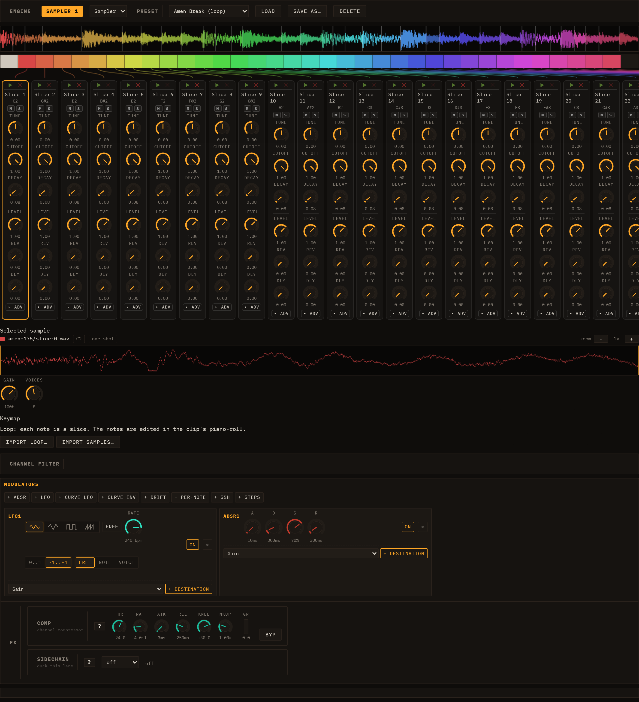
A loop is sliced into segments mapped to consecutive notes, so playing the keys in order replays the groove. Above the strips the whole loop is drawn as one continuous, colour-coded waveform with a cut line at every slice. Selecting a loop also drops a note clip onto the lane — one note per slice, each placed at its exact position so the notes form a continuous staircase — opened in the piano-roll; hit Play and it replays the loop, now as discrete notes you can move, mute, repitch or re-order. The clip keeps the loop's waveform as its header.
See Editing Clips for drawing patterns in the drum grid, and Engines for the Drum Machine engine (which lists every kit — synth and sample — in a unified preset table).
The audio channel is the first-class way to bring a finished loop into a Loom session: drop a WAV and it plays tempo-locked to the project without changing pitch, with its waveform shown as a header above the clip editor. It stays a pure audio loop; to chop a loop into individually editable note slices, load it through the Sampler's Loop family instead (see Sampler).
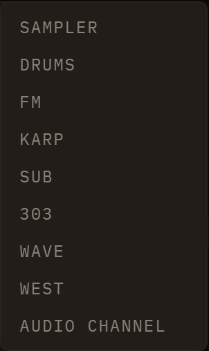
There are two ways to add one:
Each new audio lane gets a launch button on its scene row, so it is immediately playable alongside the rest of the session.
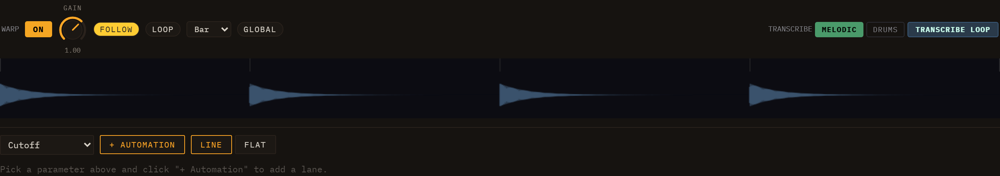
An audio clip has no note grid. Clicking it opens the audio-clip editor — a ♺ Warp ON / OFF toggle (tempo-locking, see below) above a waveform header.
The waveform header shows a peak view of the buffer with a bar/beat ruler, any detected slice markers (orange), and a live playhead while the clip plays. This same header also appears above the normal piano-roll or drum-grid for any clip that references a buffer, so you always see the audio you are editing against.
When the transcription helper is configured, the audio-clip header also shows a TRANSCRIBE row with a melodic/drums toggle and a Transcribe loop button. This sends the clip's effective loop region to the local /transcribe pipeline and creates a fresh lane with an editable note/drum clip from that region.
With Warp ON (the default), the audio channel plays in time with the project BPM using a pitch-preserving WSOLA time-stretch:
With Warp OFF the loop plays at its natural speed with no tempo sync — useful when you want the audio exactly as recorded.
First-play note: on the very first loop iteration after import (before the stretch cache is warm) playback briefly falls back to a varispeed render — a slight pitch shift that self-heals from the next iteration. At the loop's native tempo the ratio is ≈ 1, so even that first pass is near-identical.
The audio channel itself is a pure WAV loop. To chop a loop into individually editable hits, load it through the Sampler's Loop family (see Sampler) rather than the audio channel. Loom detects slice points (from embedded Acid / cue / AIFF markers when present, or by onset detection plus a tempo estimate), stores one short sample per slice in IndexedDB, and creates a note clip that triggers the slices in order on a piano-roll — so the groove plays back identically, now as discrete, editable notes. Move, mute, repitch, or re-order the hits in the piano-roll, and tweak each slice's tune/cutoff/decay/level/pan in its channel strip (see Per-sound parameters); the clip keeps the original waveform as its header. (Earlier builds did this from a ✂ Slice → pads button on the audio channel; that moved to the Sampler's Loop family.)
Amber warp markers appear as vertical lines in the waveform header; drag one to re-anchor that beat to the grid.
An audio clip can carry warp markers — sparse reference points that pin specific audio beats to exact positions on the session grid. With markers in place, the WSOLA time-stretcher locks each inter-marker region independently, so the groove tracks the grid precisely rather than relying on a single global stretch ratio.
Auto-seeding on stem import. When you separate a track into stems (see Stem separation), Loom analyses the drums stem (the most rhythmically reliable) and seeds quarter-bar warp markers automatically across all stems of that import. The drums stem becomes the warp reference for the group; its clip is the one with a fully editable marker overlay in the waveform header.
Editing markers. Open the drums-stem clip in the inspector. In the waveform header you will see amber vertical lines at each marker. You can:
Edits to the reference clip's markers propagate automatically to the other stems that share the same warp group — move one marker and all four audio clips update together.
Warp pill. An amber Warp pill in the clip-editor toolbar toggles warping on and off for the clip. Warping is pitch-preserving (WSOLA) and re-renders automatically whenever the project tempo changes, so stems stay locked to the grid as you experiment with BPM.
Stem separation lets you drop a finished song into Loom and get it back as four separate Sampler lanes — Vocals, Drums, Bass, and Other — so you can mute, solo, and remix each part inside the existing session.
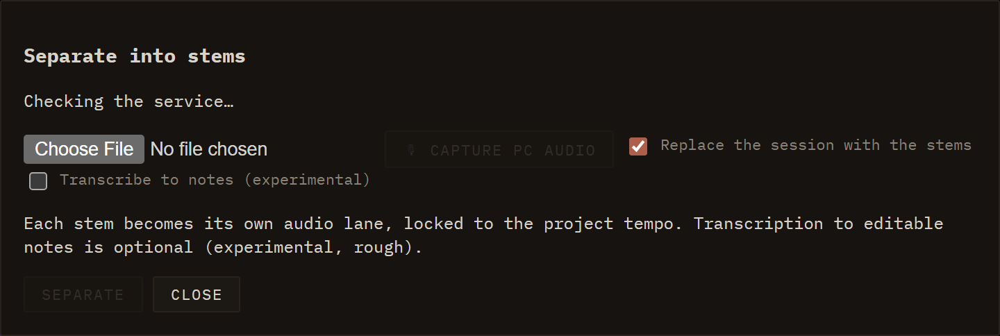
Click ☰ Stems… in the session bar (the second header row, alongside Save / Load / MIDI). A dialog titled "Separate into stems" opens and immediately checks whether the local helper service is reachable:
To separate a track: pick an audio file with the file picker, then click Separate. The dialog shows a progress bar:
The session BPM is updated to the detected floating-point tempo of the imported track on import, so the warp ratio starts at exactly 1.0 and the grooves lock to the grid from the first bar.
The entire lane-creation is a single undo step, so you can undo all four lanes at once.
Transcribe to notes (opt-in). A "Transcribe to notes" checkbox in the Separate dialog (off by default) tells the service to additionally analyse each stem and create a note clip alongside the audio:
The note clips are placed on a second layer within each stem lane and are immediately editable in the piano-roll or drum-grid. They are a convenience starting point, not a perfect transcription — pitch detection works best on monophonic or sparse material.
Cancelar aborts a running job and frees the temporary files on the service. Cerrar closes the dialog (only available when no job is running).
The feature is entirely opt-in. If you never start the service, nothing else in Loom changes — the ☰ Stems… button is the only touch point, and it degrades gracefully to a clear "service not found" message.
Stems land in IndexedDB as ordinary sample assets: they survive browser reloads just like any other sample you import.
The separation runs on your machine via a small Python service in tools/stem-service/. It requires Python 3.10+ and ffmpeg on your PATH.
cd tools/stem-service
python -m venv .venv
# macOS / Linux:
. .venv/bin/activate
# Windows:
.venv\Scripts\activate
pip install -r requirements.txt
uvicorn app:app --port 8765
The first time you separate a track the service downloads the Demucs htdemucs model automatically (several hundred MB). Subsequent runs skip the download. Separation takes roughly 1–2 minutes per song on CPU; a GPU-enabled PyTorch build is much faster.
If you want to run the service in a GitHub Codespace (a Linux VM with Python), start it there with the same commands above, forward port 8765, and paste the resulting HTTPS URL into the browser console:
localStorage.loomStemServiceUrl = 'https://your-codespace-url-8765.preview.app.github.dev'
The same override works for any non-default host. CORS for localhost:5173 (dev), localhost:4173 (preview), and the GitHub Pages origin is already configured in the service.
Note: Chrome's Private Network Access policy may add a preflight request when the Pages version of Loom calls
http://localhost:8765. The lowest-friction setup is running Loom locally (npm run dev) alongside the service.
For full notes on CORS, the HTTP contract, and the Codespaces workflow, see tools/stem-service/README.md.
Loom keeps everything in the browser. There is no account, no cloud, and no server upload — your sessions live in your browser's localStorage and on your own filesystem when you export them. This chapter covers how to save and restore sessions, undo your work, and render a scene to a WAV file.
Every parameter, every lane, every clip, and every scene is part of the current session. Changes take effect immediately; nothing is auto-committed to disk. When you close the tab, the browser preserves the last-saved state via an autosave entry in localStorage, so reopening Loom typically drops you back where you left off.
Three buttons on the session bar (the second header row) drive session management:
| Button | What it does |
|---|---|
| 🗋 New | Discards the current session and starts a blank, empty one (tooltip "Nueva sesión vacía"). |
| Save | Opens the Save Manager with the name field ready to type. |
| Load | Opens the Save Manager to browse and restore a saved session. |
See Transport for the full two-row header layout (transport & tempo on top, session & I/O below).
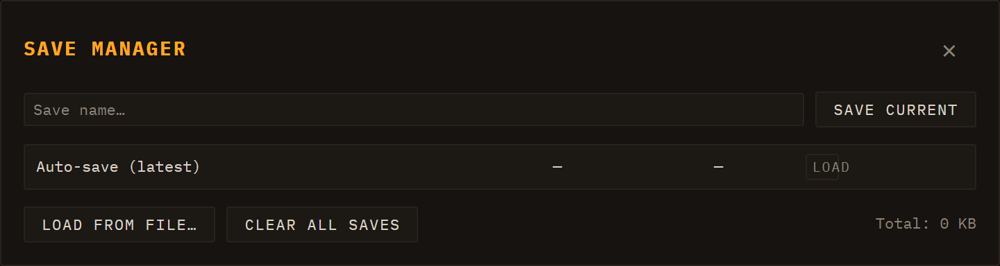
Clicking Save or Load opens the Save Manager modal. It is the single place where all session persistence happens.
Type a name in the text field at the top and click Save current (or press Enter). Loom writes the full session state — BPM, time signature, every lane's engine + inserts + clips + scenes, the mixer state, and the arrangement take if one exists — into localStorage under a unique key, and also updates the autosave slot. The entry appears in the list immediately.
The save format is versioned (schemaVersion: 3). When you load an older file Loom migrates it automatically; saves with an unrecognised schema version are rejected with a warning rather than loading broken state.
Each row in the list shows the session name, date/time, and size in KB. Per entry you can:
.json file to your filesystem without closing the modal.The topmost row is Auto-save (latest), which always reflects the state at the time of the last named save.
Imports a .json file you previously downloaded (or received from someone else). Loom validates the schema before applying it; an invalid file shows an alert.
Removes every named entry from localStorage. The autosave slot is preserved. A confirmation dialog appears before anything is deleted.
The footer shows the total size of all named saves, so you can keep an eye on localStorage usage.
Loom keeps a global undo history that covers every session mutation: adding or removing lanes, clips and scenes, editing notes in the piano roll or drum grid, moving or tempo-scaling clips, changing engine parameters via knobs and faders, and inline renames. You can step backwards and forwards from the header buttons or from the keyboard.
Header buttons. A pair of ↺ Undo / ↻ Redo buttons sits in the transport bar, just to the right of the Play / Stop controls. Each reflects the current state of the history — it is disabled (greyed out) when there is nothing to undo or redo — so you can see at a glance whether a step is available. Click ↺ to undo the last change, ↻ to redo it.
Keyboard shortcuts.
| Action | Shortcut |
|---|---|
| Undo | Ctrl+Z / Cmd+Z |
| Redo | Ctrl+Shift+Z / Cmd+Shift+Z or Ctrl+Y |
Capture is automatic — Loom snapshots the session after each interaction and coalesces a continuous gesture (a knob or fader drag, a note drag, a marquee move) into a single undo step, so one drag undoes in one click. The shortcuts are inactive while a text input has focus, so typing a save name — or an inline rename — never accidentally undoes your work. Loading a session, loading a demo, or starting a new session clears the undo history.
WAV export is part of the unified REC group on the session bar (second header row), not a separate button. The ● REC button (tooltip "Grabar — el modo se elige al lado") records using whichever mode is selected in the adjacent mode selector (#rec-mode):
To export audio, pick ⏱ live or ⚡ offline and press ● REC. The two WAV backends behave as described below.
The real-time backend is the ground-truth render. Loom restarts the scene from the top, taps the live master output (after all inserts, compression, and master FX), captures the audio through an AudioWorklet recorder, and stops the transport when the capture finishes. What you hear during the export is exactly what ends up in the file — the same signal path, the same timing, the same random variation from any voice that uses it.
Because it captures live audio, it takes exactly as long as the scene itself.
The offline backend rebuilds the full audio graph — lanes, inserts, master bus — inside an OfflineAudioContext, applies every lane's current sound state, batch-schedules all note events, and renders faster than real time without touching the live session. It shares the same encoder and download step as the real-time path, so the output format is identical.
Offline rendering is faster but it replicates the deterministic part of the signal path; any non-deterministic element (e.g. a voice with random modulation at note-on) may differ from the live sound.
loom-scene-<timestamp>.wav.After the export finishes the transport stops.
The public instance of Loom is deployed automatically to https://ijol.github.io/Loom/ — every push to main triggers a GitHub Actions workflow that runs vite build --base=/Loom/ and deploys the result to GitHub Pages. The standard npm run build (base /) is for local development or self-hosting on any other path.
Loom has two main views: Session and Performance. The Session view is the clip grid you work in most of the time — lanes, clips, and scenes launched on demand. The Performance view is a linear arrangement timeline: a fixed song laid out from left to right with a playhead that moves forward through it, starts at the beginning, and stops at the end.
Switch between the two views using the Session / Performance toggle in the transport bar (#mode-toggle). Switching stops playback. See Transport for the full transport layout.
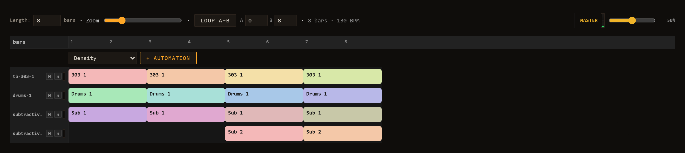
The arrangement starts empty. There are three ways to give it content.
The fastest route from a working session to a playable song is the ⤉ Copy-to-Performance button (#copy-to-performance) in the session bar of the header — now an icon-only button with the tooltip "Copiar las escenas a la timeline de Performance". Clicking it calls arrangementFromSession, which walks your scenes in order and lays them out as a linear song:
After the layout is computed, Loom switches you to Performance automatically. The operation is undoable.
You can record the arrangement in real time while you play.
Recording is driven by the unified REC control in the session bar, which has three modes selectable beside the ● REC button: 🎛 take (the default — captures knob moves + clip launches into a performance take, described below), ⏱ live (records real-time audio to a WAV file), and ⚡ offline (renders the current scene to WAV offline, faster than real time). The steps below assume 🎛 take is selected.
#rec-mode, next to the REC button) is set to 🎛 take — its default. (The other two modes, ⏱ live and ⚡ offline, record audio to WAV instead; see Saving & Export.) Then click ● REC (#rec) in the session bar to arm recording.If you arm REC and then switch to Performance mode before pressing Play, the arm is cleared automatically (a toast notification appears) because Performance mode drives playback from the arrangement directly rather than from the live session.
When you import a Standard MIDI File via the MIDI Import panel (see MIDI & Samples), Loom calls the same arrangementFromSession logic after building the session. Because an imported MIDI file produces a single scene whose clips span the full song, the arrangement comes out as one long section per lane — the complete track laid out linearly from bar 1.
Once the arrangement has content, the Performance view shows:
#perf-playhead) that moves in real time via requestAnimationFrame while the arrangement is playing.The timeline does not support moving or resizing bands by hand. Bands are generated by recording or Copy to Performance; to change the layout, re-record or re-copy.
The Loop A–B button in the Performance toolbar toggles the arrangement-wide loop brace. When active:
durationSec and stops — every lane is halted and the transport stops.This loop brace operates on the arrangement timeline as a whole. It is distinct from the per-clip loop brace available inside the piano-roll and drum-grid editors, which loops a sub-region within a single clip. See Editing Clips for the per-clip loop.
Press Play while in Performance mode to start playback from the beginning of the arrangement. The arrangement's own play state is used — it is independent of the live Session runtime. The playhead advances, clips launch at their scheduled times, and automation curves are applied continuously.
At the end of the arrangement (when Loop A–B is off), all lanes stop and onArrangementEnd fires, which stops the transport. You can press Play again to restart from the top.
Knob automation written into the arrangement's curves is applied every lookahead tick alongside clip launches. Automation values are normalised (0–1) internally and mapped to each parameter's min–max range at playback time.
Automation curves can be added by hand — you do not have to record a take first. Set a non-zero Length in the toolbar (or record/copy content so the arrangement has a duration), then use the automation header that appears just below the ruler.
The header row contains a grouped parameter dropdown and a + Automation button. The dropdown lists every automatable parameter in the project, organised by prefix (lane ID or master). Each entry shows the parameter ID and its label — for example lane-1.fx.reverb.wet — WET. Select the parameter you want, then click + Automation. A new lane appears below the clip band for that lane (or in the Master section for global parameters). The curve starts flat at the parameter's current value.
Two brush buttons in the toolbar control how you paint:
The active brush is highlighted. Each lane also exposes On / Off and Smooth / Stepped toggles in its header. On / Off mutes the curve without deleting it. Stepped switches interpolation from smooth linear to staircase, snapping the value at each sub-step boundary — useful for parameter jumps that should be instantaneous.
Click the × button on the right side of the lane header to remove the curve entirely. The action is undoable with Ctrl+Z / Cmd+Z.
Curves added manually behave identically to curves captured by recording. During arrangement playback they are applied continuously alongside clip launches — knob values are updated every lookahead tick, mapped from the normalised 0–1 curve to the parameter's min–max range. Curves generated by a recorded take (see Transport — REC) and manually drawn curves live in the same list and can coexist on the same lane.
For modulator-driven per-lane automation (LFO / ADSR) that runs in Session view rather than the arrangement timeline, see Modulation & Note FX.
Each lane header — visible in both the session lane strip and the mixer — carries three live controls:
Mute and solo states are saved with the session.
The arrangement is saved as part of the session file (schema version 3). Recorded takes — clip bands, automation curves, loop brace position — survive Save / Load and browser restarts. Undo/redo covers arrangement edits (length, zoom, adding/removing curves, drawing automation, Copy to Performance) but not the raw recording; a take is finalised on Stop and does not participate in the undo stack.
See Saving & Export for how sessions are saved and loaded.
This chapter is for contributors who want to extend Loom or understand how its internals fit together. Read it alongside CLAUDE.md at the repo root, which is the canonical, always-current architecture reference — this chapter expands on it in prose.
Three structures hold everything together:
A plugin registry — engines, FX, and modulators are all plugins. They are discovered at build time via a Vite import.meta.glob scan, so adding a new one means dropping a file in the right directory, not editing core wiring.
SessionState — the pure data model: lanes contain clips, scenes reference which clip each lane plays. No audio side-effects live here.
LaneResourceMap — owns the live Web Audio nodes for each lane. One entry per lane, holding a ChannelStrip, a SynthEngine instance, and an InsertChain. The lane allocator in src/app/lane-allocator.ts is the sole path for creating and swapping these resources; nothing else should construct them directly.
src/app/plugin-bootstrap.ts calls import.meta.glob at build time over two trees:
src/engines/*.ts — synth engines
src/plugins/fx/*.ts — FX inserts
src/plugins/modulators/ — LFO / ADSR modulators
Every module in those trees is eagerly imported. Any exported value that satisfies the PluginFactory shape ({ kind, manifest, create }) is collected and registered via registerPlugin. The engine registry (src/engines/registry.ts) supports both a singleton pattern (registerEngine) for shared instances and a factory pattern (registerEngineFactory / createEngineInstance) for per-lane instances that need independent state.
listEngines() reads from the singleton map and is the source of metadata (name, type, polyphony, parameter specs) used to populate the lane engine selector. Engines declare their parameters as EngineParamSpec[]; voices expose continuous AudioParams via getAudioParams(), and engines expose shared ones via getSharedAudioParams(). That is the entire surface the modulation and automation systems need — nothing else.
src/session/session.ts defines three levels:
SessionLane — has an engineId, a list of SessionClip | null slots, and an engineState bag that persists knob values, modulator configs, note-FX, sampler keymap, pad params, and kit mode.SessionClip — holds notes: NoteEvent[] (the unified note list for both melodic and drum clips), optional ClipEnvelope[] for per-clip automation, and an optional sample field for loop/song audio clips. Clips also carry loopEnabled / loopStartTick / loopEndTick for sub-region looping, and a gridResolution hint for the drum editor.SessionScene — a clipPerLane map from lane id to clip slot index (or null for a stopped lane).Notes carry a velocity field (0–127). The velToColor function in src/core/velocity-color.ts maps velocity to a blue-to-yellow ramp used by both the piano roll and the drum grid.
Saves are written as schemaVersion: 3 (SavedStateV3 in src/save/). Older saves are normalised by session-migration.ts at load time before anything else touches the data.
The master audio path assembled in src/app/audio-graph.ts runs:
master GainNode → insert chain → MasterCompressor → AnalyserNode
→ SidechainBus
Each lane's LaneResources consists of a ChannelStrip (level, EQ, send levels), a SynthEngine, and an InsertChain of per-lane FX. LaneResourceMap.replaceEngine hot-swaps only the engine while keeping the strip and inserts in place — the channel-level resources survive an engine swap.
ensureLaneResource in the lane allocator is the only place that constructs a LaneResources. Call it once per lane before accessing anything in the map. Test code that needs a lane wired up must call it explicitly as setup.
The Sequencer class (src/core/sequencer.ts) fires every 25 ms (the poll interval) and looks 120 ms ahead. On each tick it calls sessionTick(now, lookaheadSec) with lookaheadSec = 0.12, and the session host fans that out to tickLane for each playing lane.
tickLane (src/core/lane-scheduler.ts) implements the Chris Wilson two-clocks pattern: for every NoteEvent whose absolute schedule time falls in the window [now, now + lookaheadSec), it calls ctx.onTrigger. Schedule times are derived by converting clip-tick positions to seconds using the current BPM and projecting onto the absolute timeline from the loop-start anchor. Step duration for a 16th note is 60 / bpm / 4 seconds.
Two important consequences for contributors:
bpm and length are mutable at runtime; the next scheduled step picks up the new values immediately.When clip.loopEnabled is set, effectiveClipLoop (src/core/clip-loop.ts) constrains the iteration window to [loopStartTick, loopEndTick). The brace UI in src/core/clip-loop-brace.ts is the editing surface for that region.
src/engines/<name>.ts. Implement SynthEngine and export a PluginFactory with kind: 'synth'.registerEngine(instance) and registerEngineFactory(id, () => new YourEngine()) at module scope.EngineParamSpec[] and implement getAudioParams() on each voice so modulation and automation work automatically.See Engines for the full engine catalogue.
src/plugins/fx/<name>.ts or src/plugins/modulators/<name>.ts.PluginFactory with kind: 'fx' or kind: 'modulator' respectively, and call registerPlugin at module scope.Open public/presets/<engine>.json and append an entry. The gm field is optional (an integer GM program number for MIDI-import matching). JSON is the source of truth; preset-loader.ts validates and preset-apply.ts applies it at runtime by calling engine.applyPreset. Each engine's JSON keys are its own vocabulary — do not use a generic setBaseValue loop.
Append an object to the KITS array in src/core/drums.ts. Kits are parameter bags over shared DSP primitives. To add a new drum voice (not just a new kit): extend the DrumVoice union, add it to DRUM_LANES, add an entry to every kit, implement a play<Voice>() method, and add a trigger() case.
public/drumkits/<id>/ containing WAV files for each voice (e.g. kick.wav, snare.wav, closedHat.wav).public/drumkits/<id>.json with id, name, and a samples array. Each entry needs voice, note (GM MIDI note number), and file (path relative to public/drumkits/).public/drumkits/index.json by appending { "id": "<id>", "name": "<display name>" }.The existing kits (tr808, acoustic, dirt) follow this layout exactly and are the reference.
src/
core/ DSP primitives + pure logic (synth, drums, sequencer,
lane-scheduler, lane-resources, fx, meter, notes,
history, knob, pianoroll, …)
velocity-color.ts / velocity-gain.ts / velocity-lane-editing.ts
— note-velocity colour ramp, gain curve, lane editing helpers
clip-loop.ts / clip-loop-brace.ts
— clip sub-region resolver + drag-brace UI primitive
engines/ SynthEngine abstraction, registry, one file per engine
(tb303, subtractive, fm, wavetable, karplus, sampler,
drums-engine) + engine-selector UI
session/ SessionState model + all session UI
(session-host, session-ui, session-inspector,
clip-editors/, session-migration)
modulation/ LFO/ADSR voices, ModulationHost, ModulatorScope,
connection binder
plugins/ Plugin SPI + registry
fx/ — multifilter, distortion, reverb, delay, InsertChain
modulators/ — lfo, adsr
presets/ Preset loader + apply logic
(JSON assets live in public/presets/)
midi/ SMF parser, MIDI-to-session transform, GM lookup, import UI
samples/ Sample types, IndexedDB store, buffer cache, keymap,
import metadata
stems/ Stem-separation client + config + lane-plan builder
(talks to the local Python service in tools/stem-service/)
performance/ Arrangement / record model:
arrangement-from-session, arrangement-ops,
arrangement-runtime (records clip-launches + knob automation;
surfaced via the REC group's take mode — see performance-feature)
polysynth/ PolySynth poly voice host (used by Subtractive):
voice stealing, mono/legato/retrig, per-voice mod bus
app/ Boot factories: audio-graph, lane-allocator, trigger-dispatch,
knob-mounting, mute-solo, bpm-broadcast, engine-swap,
plugin-bootstrap, lane-host-wiring
save/ SaveManager (schemaVersion: 3), auto-history (AutoHistory:
snapshot-diff undo/redo + gesture coalescing, wired to the
transport-bar ↺/↻ buttons), history-wiring (legacy withUndo /
attachKnobUndo — now no-op shims)
notefx/ Note-FX plugin category (arpeggiator, chord spread) — per-lane
automation/ Clip envelope recording + read-back helpers
control/ Live MIDI controller subsystem: APC Key 25 profile, live
keyboard, LED mediator, profile registry
demo/ Baked MIDI demos + demo picker
styles/ SCSS
public/
presets/ Engine preset JSONs (20+ per engine, GM-tagged)
drumkits/ Sampled drum kits: index.json + <id>.json manifests + WAVs
tools/
stem-service/ Local Python service (FastAPI + audio-separator / Demucs)
exposing an HTTP job queue for stem separation.
Run: uvicorn app:app --port 8765
Tests: python -m pytest test_app.py (not part of npm test)
Loom has four test layers, one per risk class.
Pure logic (src/**/*.test.ts, excluding .dsp and .wiring suffixes) — schemas, scales, migrations, session/arrangement logic, modulation math. These run fast and have no audio dependencies.
Scheduling with a fake clock — src/core/lane-scheduler.test.ts and src/session/session-runtime.test.ts drive the look-ahead scheduler through a mock AudioContext clock. The fake clock advances in controlled steps so timing edge-cases are deterministic.
Real DSP (*.dsp.test.ts) — every engine and drum kit is rendered through OfflineAudioContext via the node-web-audio-api package, globalised in test/setup.ts. Use the shared battery runStandardEngineBattery from test/dsp-battery.ts. Each render writes a WAV to test/output/ (gitignored). Compare against the committed reference in test/golden/ with npm run test:wav-diff; promote with npm run test:wav-bless.
Modulation wiring (*.wiring.test.ts) — LFO/ADSR voices connected through a depth-gain bridge into a target AudioParam, verified end-to-end.
Assertion rule: always write relative assertions (a > b, a > b * 2). Never hard-code absolute magnitudes — they are a brittleness smell. If you must write one, justify it in a comment.
Colour-free output: every npm test script runs under cross-env NO_COLOR=1. When invoking Vitest directly, prefix with NO_COLOR=1. Do not add --reporter=... — the scripts already configure the right reporter.
Key commands:
| Command | What it runs |
|---|---|
npm run dev |
Vite dev server with hot reload at http://localhost:5173 |
npm run build |
tsc typecheck + Vite bundle to dist/ |
npm test |
Full suite: unit + e2e (always build first) |
npm run test:unit |
Vitest only, no browser |
npm run test:fast |
Unit tests excluding DSP renders (inner-loop TDD) |
npm run test:dsp |
DSP renders only (slow; needs node-web-audio-api) |
npm run test:e2e |
Playwright against vite preview on port 4173 |
e2e gotcha: test:e2e and npm test serve dist/ with no build step. Playwright boots vite preview over the last production bundle. If you changed src/ without rebuilding, the newest features are absent from the bundle and tests fail with "element not found" — which looks like a regression. Always run npm run build before npm run test:e2e.
Vitest runs test files serially (fileParallelism: false) because node-web-audio-api's OfflineAudioContext is not safe under parallel forks. The teardown occasionally exits non-zero with ERR_IPC_CHANNEL_CLOSED after all tests pass — that is a tinypool shutdown race, not a test failure; re-run to confirm green.
For the definitive, always-up-to-date architecture reference, read CLAUDE.md at the repo root. Implemented design docs are intentionally removed from the tree once shipped (they drift); recover rationale from git history when you need it. Unfinished work lives in docs/superpowers/REMAINING-WORK.md.